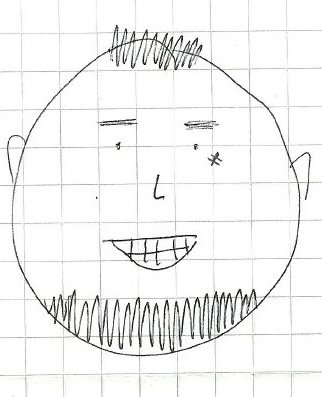

.
.
C̛̳̤̯͈̹̫͉̍̊̎̉̅͢͜͡a̴͉͇̝̙͚̗̩̯͔̽́͊͂͡͠r̴̡̢̧̲̫̲͍͓̖̰̓͐̒̏̕l̨̤̫̳̖͈̋̉̈̐̒̒̈́͟ò̶̗̼̤̤̤̀̍̓̃͆͒͐̾̽͢s̶̨͚̣̱͓͕̮̠̯̑̋̾̀̔͊́͡ Ą͙͈̼͇̏̑̃͂̂n̴̡̜͙̜͈̫̝̻̓̀͑̎̚͝d̸͇͖͔̙̎̈́̀̓̍͢͞͠ṛ̷̤̟̠̤͓̬̞̐̑̔́̀͋͑̀͆͡ę̸̧͖͇̰̩͕͈̻́̀̌́͊̊̚͢s̵̢̥̦̯̱͒̂̏̉̾ G̴͉̱̠̹̯̮̩̅̀͑̆̓͑͝o̴̹̹͙̰̗͔͚̗̘̣͗́͌̀̑̓d̵̦͔̫̫̻̏̉̓̂̒̉͑͂͘͘͟ǫ̨͕͉̘̩̬͍̻̌͆̒̍͛́͒̐̎͒͜ỷ̢̝̲̩̗͎͈̥͆̄̉͆̓͜ V̶̟̭͛̃̏̑̀͛̕͢͜͜ą̶̲̻͔̭͎͙̈́͌͐̓͡ͅr̢̨̻̱͉̞̭͐̓͂̏͆͐̾͘͝g͓̲̭̠̜̈̌͌́͞a̵̺͚͚͕͇̤̟̦̽͐͗̍̌̂͜͟͠ś̸̨̢͙̠͓̱̲͐̒͑̐̓̚̚͡͠
.
.
.
.
Ȩ̸̛̦͖͎̯̥͈̿̂̓͒̿̅̈͝͠g̨̼̲͎̙̗̟̺͔͒̈́̓́͒̋͂͆͜r̷̢̻̦̳͖͚͖̃̌̊͗͗̿̕ě̴̢̧̝͔͔͓̞̬̉̂̓͊͌͊̇̚͞s̸̛̱̞͈̬̻͚͖͐́͐͊͐̉͢͝a̧̢̢̫̱̲̗̞͍͋̀͒͂̚d̶̡̢̨̲͎̦̱̹̾̒͂̾̋ͅȯ̧͚̲̭̳͉̱̈͌͘͞ d̵͍̳͖̠̜̹͔̱̻̈̎̍̀͒̓̀̈̍ė̷̹͔̬͎́̈͋̓̓͐͟͢͜͟ P͎̩̖̜̞̙̯͔̜̓̓̄̏͋̚͘ͅě̶͎̬̪̣̆̏̽̐̇̽̓̚͟͢͡ḓ̦̱̠̯̓͂͆̎̕͡ä͈̜͚̫̫̘̻͍̟́̋̋͟͞͞ǵ̵͇̱͖͇̯̘͛̾̅͘͜͡ͅǫ̱̗͕̈̂͒̊͜͟͟͢͠ģ̧͎̫̩̩̆̄͗̀̈́͆̆̑͛í̳̼̗͓͚̗̮͔͊̿̌͛̿̇̊̆å̶̡͍̺̘̠̜̺̓̆̋̚͞ e̶̘̹͈̩͈̎̈͆͛̆͜n̴̨̨͓̥̜͓̮̗̆̽̐̔̅͋͊̓́̂͟ͅ E̸̡̻̯͎͇̮̘̖͑̏̉̓͆̔̏̎͡͝d̶̛̬̞̰͈͚̯̭̱̗̈̿̒͒́̉͑̀͞ừ̪͍̥͇͚̻̠͙̜͔̌͒̈́̋̇̕̚c̡̜̞̻̣̘̞͆̍́̋̌̅̈́͐̚͘ǎ̶͇̤̻̭̗͚̏̊̆͊̐̍͞͠͡ͅc̳͓̟̯͂̍̂̽̆͜͝ĭ̸̞̥̤̯̥͍̖̫̓͆͗͘̚͠ó̰͈̫͖̮̜̜̓̍͂̇͠n̴͖͔̞̥̗̐͑̿̌̅̋
̨̼̭̮̎̎͛͑͟͡͠
̴͖͓̥̺̜̯́́̀́̀́́͒͒̓D̴̛̬̳̘̣̻̈́̄́̾͝i̧̤͇͖̦̤̼̗̇̉̀̉̀̌̊̓̕͞ŗ̶͖̙̟͓̖̀́̂̂̐͞ͅê͓̜̟̙̺̯̦̒̀́͋̆̏ć̡̡̤̖̗̥̰̜̗̿̃̿́̎c̬̫̜̘̤̬̙͈̄̎̑̑͐̐͘͘͘î̧̝̞̮̩͓̻͂͒́̈́̍͘ͅó̴̹̬͚̘̩̻̳̝͍̞̈́̑̀̆̀̏̽͗͠ṇ̡̛̩̳̳̻̆͗̔͊͑͘:̴̣̜͙̤̩̮̦̲͌̅̋̎̚͟͞ J̴̣͙̱͔̹̦͎͐̊̂̍̽̕͡ǫ̹̻̰͉͖̣͛͐̅͋͌̂́̆̓͡s̳̭̥͐̌͌́͌̎͆̆̏͢͡ͅé̬̮̺͓̰͖̊̋̐̋̈́̐̇͟͝ͅ J̨͍̹͓̱͇̹͊̉͆̔͡o̴̧͕̹̗̲͓͋̓̐̾́̃͐͜͢͠ͅà̵̛͖̥̙̮̩͓͚̺̬̣͗͘̕̕q̷̡̧͔͔̫̌̍͐̾͐͑̆̕̕͟u̸̧̧͍̟͙͑̅̊͊̓͢ͅͅị̢̻̗̳͓́͊͂̓̄̍͑͡n̢̢̡̛̝͉͙͗̆͆͂͊͞ P̴̯̘̮̥͈͖̙̘͐̏̀̂͑̐̓̈́é̢̝̹͎͍͇̩̙̝̃̊̐͛̒̄͊̕̕ͅr̢̢̧̫͎̲̟̥̍̈́͋̍͗̀͢é̥̘̱̱̮̭̪̈́̆̀́̚z̴̧̛̗̙̼̮̐̾̓̒̃͝͠ 4̸̘͙̤̦̥̇̄̓̌̿6̸͓̺͔̭̬̠̳̥̇̎́́͞6̛̦̗͇͓̯͓͖̞̻̏̔̔̀́̊̔̓9̸̧̧̤̼͈͈͈̳̹̈̏̎̂̎̋͒͘̚͝,̛̺̥̹̯̅̇̌͆͐͢͠ Q̷̡̬̝̘̻̫̝͂͑͑̊̔̀͐̾͜͟͝u̴̖͈͙̣͆͒̍͗̌͛͛͢i͓̭̥̠̙͂̔͗̂̄͒̆̚͞n̷̡̛̗̠͎͓̹̦͊͊̇̿̎ͅt̵͎̰̫͖̲́̂̑̀̃̒ą̵͕̣̩̝̝̙̺̄̽̂̈́͒͊̄͘͢͝ Ņ̧̛͙͎̟̙͉̘͚̈͂̾̑͗͘͘͠ǫ̸̡̠͔̝͇̍͊̆̒̕͢͝r̨̙̤͇̺̹̤̰͚̀̃̅̽̓̋̃̏͠ͅm̷̛͚̤̦͎̗̂̿̍͘ͅa̢̨͓̦̹͂͌̏̌̀́l̻̘̘̯̒̎̍̀̒͑̈͟.̡̢̢̬̪́͛͋̃̑̀ S̶̡̮̦̱̜̲̪̔́̆̂̊͘̚ả̸̛̲̩̯͈̣̪̳̋̍̑̀̐̚͜͡͠ǹ̥̣̼̘͉̺̈́̍͒͌̒̀͡t̵̳̟̖͇͎̤̣̪̭́̾̈́̎́͜͡i̸̡̛̙̟̣̣̫̠̪͒̓̉͘͟ạ̛͇͉̞̟͇̞̓̆̋̒̃̔͠ģ̴̭̥̜͎̪̇̀́͌̉͐́̍͐̚o̢̖̞̥͉̙͙̭̜̓͋̿́̉̽̓͐͌͡.̩̺̫͈̙͕̣̈́͊̌̎̀̏̇̌̊͞
̷̛͇̬̩̯͉͚͌̐́̉̀̔̒̄̚ͅŖ̵̤̝̦̮̯̭͚̍͐̃̃͛̓͢Ű̝͉̰͕͈͇̱́̇́͒̕Ţ̨̩̝̝̝͉̘̒̈́̒̽̍͐̓̒͛ͅ:̭͎̣̯͔̮̄͊̍͗̏̏̒̽ͅ 1̶̬̲̫̪̜̦̀̐͋̓̎̿̾̊̎͟7̬̼̲͇͙̬̝̗͒̅̆̒̐͒̃͑͘.̟̼͓̟̻̇̽̐̇̇̂̊̕͞͡4̨͉̳̟̱͖̬̘̺̽͑̍̉͗̎̋̽̏̈́1̸̢̤̯̣̟̅̑̄̒͌́̈́2̶̧̝̟̭͎͊̒͊̎̍̈́̓̏.̷̡̳̖͓̤̻́̇̃̿̽̂̕͞9̰̖̲̮̜̯̯̺̈́̌̉̔̒͗̕͜͡0̷̩̞̘̜̣̍̆̑̀̂͜1̢̫̝̮͍̙̋̀̅̋̔̎̾̄̑͘-̨̙̱͉̼̮̣̗͔̿́̚͝͞0̹̦̭̜̬̺̞̜̟͉́͊͒͡͞
̶̫̤͙͕̲̱̀́͋̈̈̇͢E̦͎̭̫̯͖͖̅́̀̊͐ͅm̸̟̮̗͔̪̖̗̾̇͊̽̽͐̌a̯̺̫̥̗̼̦͚̼͂͒́̆̽̔̏̔͘ͅī̦͙͕͙̋͗̇̍̿͂͘ͅḽ̴̨̨̦̘̞̘̯̝́͂͒̀̔̽̃́̊͡:̢͚̯̗͍̰̟̬͎͍̔̆̍̒͋́̒͋͠͡ ̥͇̖͔͍̯͗̊̄̑̓͘͜͠͝ c̡̢̫̱̝̥͈̲͇̀̄́̍̇͆̇̌͛a̙̻̹̺̳͖̺͉̭̎̅̆̀͠r̸̨̨̡̹͎̞̖̱̆̌̏̍̄̚͟ļ̷̣̰͚͙̞̭̋͒͑͘͢͟͡o͚͇̗̺̻͉͙͉̎͛́̔̓͊̀͒̓̕s̼͇̤̘̮̤̭̀̌̃̇͋͐́̓̚͢͟͝.̴̡̢̧͚̥̮͔̭͛̌͂̂͞͞͞g̢̠̥̲̟͎̤̓̏͛̀̿͂̃ō̶̢͇̬̩̺͖̿̃̌̒̈̃̾͢͡d̴̢͖͇̤̞̰̒̃̿͂̈́̓̓͒͂ò̢͕̙̘̰̻̪̼̞̊̍̊̇͋͐̃̅y̰͍̞̺̣͋̉̾̆̃͒̑̀̕͟.̡̖̱̹̪̬̦̹͕́̑̐̌͐̏̋͂̂͢v̵̱̝̲̤͓͒̾̇́̉̐̏͜͢͡ą̶̫̖͚̰͎͓̈͗͗͆̊̃̕͟͝r̡͕̘̞̯̻̝̳̮͂͐͋̾͆̀́̀̔͠@̴̢͕̫̬͍̣̖͉̙́̅͑̊͋̋̚͡ͅģ̶̮̼̖̥͔̣̤͌̽̈́̆̀͑̿͡m̶̧̡̟͉͇̘̜̠̼̿̀̂̑͝ͅą̴̧̛̥͍̞͚̤͇̏̄̾̈́̒̕͝i̵͎̖̻̬̖̩͚̙͔͋̈́̾͐͐̄̚͜͞͞l̵̖̩̰͚͎͔̯̣̘͌̌͂̄͒̓̀͆͟͠.̡̝͍͚̟͆̅̅̇̄̊̀͊͂͡c̨̱͎͇͎̹̆̂̑̑̊̀͒̎͢͝ó̢͍̩̯̟̣̗̭͚͙̽̈̄̑m̘̫̲̮̥̲͂̃͐̔̈́͆̆̏͜
̶̝̟̻͇̌̀͑͒͒̕͜T̶̡̛̻̰̙͈̀̒̒͆̅͘ẹ̸̡̟̝̞̱̪̫̝͙̀̈͆͐̓͞l̶̨̤͈̜̹͉̯̝͛̓̽̎̀̂̇̓é͕̹̞̤̤͇̪̑̐̀̔́̂̍̕f̷̡̛̰͓͍͍̜͎̔͛̍̅͌͜͡ơ̶̩̜̭̯͙̈̉́́̆̏͂͟͝ṉ̨̧͈̜̠̦͈͍͋̎͌̈́͛̕͘͝o̢͕͍͚͕̙̪̘̩̅͒́̒͊̏͟͡s̤̝̪͂̄̐̎͋́́̋͟͟:̝͇̤̙͙̪̳̼̼̌͛̑͗̃̔͒͗̚͟ +̧̨̧̹̗̞̠̖̹̽̍̀̂̚͘5̴̼̦̠̹̟̾͗̓̓̊̕ͅ6̡͔͖̖͉̦̭̄͌̂͌͆̅̕2̸͕̹̜̝͊̓͛͆̈́̚͜͝ 2̶̛̝̹̦̪̞̒̓̌̆̊́̃͛̕7̷̧̦̠̘͎͙̫̊͊́̅͢͢͠ͅ7̶̨̣̣͈̲͙̮̳̭̂̍̑̎̈̄̉̕͝5͕͕̫̳̠̏͛͐͂̈́͆͑ 7̴̧͖͍̙̦̥͕͕̽̑̈̒̌̅̈́̽̀3̵͖̬̻̝̘̭̆͊̌̇́̀͢͡͝2̵̡̡̯̳̜̔͋́̑̏͂̌̾̕͘0̸͉̯̜̖̺̫̄͒̿̓͐͢͡,̛̞̹̦̠̫̃́̐͑̾͘͠ +̧̜͓̲͔̦͖̏͗̊̎͟͠5̛̙̝̣̥͕̦͎̰͇̯̔͊̓̚6̜̘̹̩̪̭͊́̆̊͗̄͘̚͘͡9̧͉͈̲̩͚̼͕̟̯̒͂̒̍̏́͡͞ 6̧͙̭̯̳͇͈͈̼̟̿̒̋͊͛̕4̭͖̞̫̯̯̞͂̿͛̿̂͠4̛͙̫̳̪̹͖̺͛͆̔̅̓͒͘ͅ0̷͙͎̝͕̗̹̪̠̀̉͊̔̂͐̓͟͜͞ 7͖̼̪̞̪̥̝͈̈͋͋́͐̂͛͂̔9̧̢̮̬̙̼̮͚͆̃͐̋͛̀̆͟2̸̨̤͉̤̥̼̇͂̽̈́̎̈́͘͞0̸̘͕̘̞̖̎̏̉̾̉͐͑͠͝͠ͅ
̸̨͉͇̮͖̰̞̒͋́̍̐͟͝N̴̛̠͎͉̻̣̆͐̉̑̾͆̒̈́̈́͢a̡̢̪̪̤̅̈̊̍͆̽̒͂͂̕c̶̦̺͚͓̮͚̏̀͌̚͢͡͞i̴̡̧͚͍̺̬̩̮̍͌̀̋̿͟͝o̧̢̡̺̙̜͆̊̈́̆̌̓̌̑͞ṋ̢̲͎͎̺̆̆̾̆̉̚͘͟͟͠͠͝ą̵̡̗̹͈̲̝̂̓̿͊̔̃̕͝ļ̤̻̪̩͔͉̺͛́́̈́̃͂i̸͔͕͙̼̱͎̞̋͛̇͆̾̂̂̚ḑ̸͕̪̻̖̥̔̀̓̍͗̈́̓̌̇͐͜ͅͅa̷̫͖͇͔̮̠̒̔̆̐̈́̆̽̚d͉̜̼̻̖͍̫̿͆̀͑̅͘:̵̨̝͓̳̩̀͂̓̂̚͢͡͡ C̶͖̪̖̙̐́̅̉̊͟͡͝h̸̢͕̣̲͚̿̂́̍̌ḭ̷̡̨̱̯̟̮̀̀̈́͒̄̿̊̋̚͞ĺ̵̢̧̫̥͛̎̌̿ͅͅe̯͕̟̤̮̋̉̈́͛̐͒̌̀͒͢n̸̡̟̬̱̗̎̐̈̅̃̚͞͝a̸̢̢̨̩͇̼̥̝͇̓̿͊̓̋̽̕͟
̧̡̻̝̼̮̳̤͇̿͐͆́̂̓̄̕͜͝F̵̛̝̫̪̗̪̮͓̗̙̦̀͑̎̉̚ḙ̱͙͙̤̇̉̑͑͂̄̈̚͞ͅc̼̥͎͓͋̄̑̍̏́͜h̷̨̨̝̖̟̺̗͔͌̇̌͌͋͜ą̶̰͇̯͈̦̘̳̤͍̂̿͂́͆̾̊̚ ḍ̺͓̺͖̓̌̔͒̿͛͟͡ͅȩ̶̨̞̜͙͙̿̿̈́̉͞ n̶̢̛̲̭͓̭̦͖̓̍͗̋̕̚͜͡a̷̢̮̟͚̙̭͓̐̉̅̾̆͝ç̵̹̤̮̜̺̩̤̑̍͌͘͘̚͞͡i̼̗̙̙̥͇͑̄͛̿̍̀͊m̶̢̧̮̯͛̈̌͆͒̎̇͟i̯͈̱̯̪̯̯̰̇̐̌͌̽̋̎͌͘͠ȩ̮̲̲̭̭̰̈́̆̃͊̈͑̄͊̽ͅñ̸̨̞͍̮̞̭͔̋̃̇͆͞t̮͈̼̙̗̯̉́͆̀̿̿͠o̸̙͕̖̹͓͎̠̗̜͂͌̔͂̀ͅ:̷̮͎͙̙̙͔̤͛̒͛̃͛̌͜͟ 1̨̢̭͙̳̟̖͌̆͋̋̒͡2̵̛͉̝̩̩̝̟̰̠̲̏̆̀̍ d̹̼͍̬̹̀̐͊̑̚e̝͖̟̻͓̘͔̖͂̑̑͊͐̉͐̉͜͡ Ȯ̴̡̮̖̞̞͙͈̰̊͒̐͐̍̄̈̅͞ç̡̡̫̳̘̓̿̔̍̍̀͗̐̕͢t̯̺̥͓̟̞͎͗̓̃̔͌̓̕͝ṳ̷̢͎͙̥͗̇̾̋͂̕̚͢ḃ̵̝̖͉̮͙̂́̾͛͑͜͠r̵̨̨̗͔͓̠̹͓̜͑̔͐͐̉ȩ̸̢͕̹̺͋̓̒̓̅̿́̄͋͝ d̡͍̗̳̘̞͛͊̏͆̆̃̍̕͜͠͞ę̵̛͎̻̗̮͑͆̅̎͗̾͠͞͝ 1̱̫̞̹̀͆̋̿̊͑̕͘͢9̴̧̛͙͙͍͍̅̅̐͘̕͟ͅ8̧̖͈͈̖̠͖̤̹̓̇̊̀̀̓͗̃̎͟9̷̢̬̩̟̣̭͔͇̭͗́͛̆̔̏̚͠.
FORMACIÓN ACADÉMICA
..2̹̤̠̘͔̗̱̣͋͐͌͆͌̆̒̒͠0̶̟͕̩̦͎͔̟͋͋̂̍̓̄̐͌͝0̡̧̗̮̘̱̾͊͋̎͘ͅ8̺̥͔̟̌͗̓̋̈́̕͟͝-̢̼̲͎͈͚̜̃̓̄͆̐̍͒͝͡2̨̛̥̱͉̼͌̅̔̃̇̑̄̕0̨̤̪̭̖̲̦̻̝͍̉̍̋͋̄̂͠0̴̢͙̪̮͕͖̝̲̩̭̑͌̋̄͊̕̕͝9̷͖̺͓͍͓͉͗̆̾̐̄͘̕͟͞͝ͅ (̡͉̠̖̪̩͎̙̌͊̓̇̔́̋͡4͇̼̙͇͉̙̀͋͊̃̈͐̌͋̀͢͠ s̸͈̮͍̯͚̤̭̯͓̃̿̉̽̀̿͢͝͝ḛ̢̡̤̖͙̿́̅̓̽͝m̸̧̧̝̻̻͓͕̓̀̄̓̽̎͜ͅe̷̢̹̘̦͖͖͙̫͙̎͆̋͒͡͡s̴̢̞̠̻̖̙̱̉̀͆̈̂̓̚͞͠ť̶̢̧̹̤̫̜̪͑͗͌̑͢͢͠r̞̠͕̮͉̳̥̼͍͉͐̉̾̃́̓̋ę̵͙̻̬̗̯͈̮̃̈͒̄̓̋͌̈́͝s̴͉͈͓̮̫͗͋͂̌̀͒̈̽̅͠)̶̨̡͈̪͓͋͋̏̊̑͢͢͡͞ͅͅ
̶̢̨̗̰̤́͛̈͌̾̐̽͊
̦̥̲͓̭̘̠̖̍͌̊̑̄̌̋͘̕͠Ļ̸̠̬̞̜̫͚͗̅͂̕͘͜ͅi̛̜͓͓̤̱͊͑̀̎͜͞n̞͖̻̯̞̟̆̅͑̑̆̄́͢͡͞͡g̛̭̥̖͈̖̎͂͗͌̈́̐̈͘ü̞͈̦̖̜͒̀̋̔̒̍́͞͞í̸͎͉̦̬̤̓̾̓̄͑̐̀͂͟͠ṡ̡͈͖͇̮̳̯͚̜̽͌̂̍̀t̶̠̙̙̯͎͚̩͔̱̒̉̒̽͗̀͑͘̚ͅi̴̫̦̜̻͊̋͑̽͘͢c̶̛͓͓͖̮͕̉̊̿͆̔̈̾͢͠a̷̢͓̹̞͓̞̜̞̪͌͛̿̍̍̓̒̕͢ ḁ̵̡̰̳̺̜͖̯̝̑̔̈̂͗̚͘͠͠p̞̣̰̪̗̔̔̾͆́͜͞͞͞l͎̠̣͓̣̖̑̓͐̿̔͘͝͠ï̲͎̪̣͖̫̳͌̔́̓̒̐̈͑̔ç̴̧̰̘̣̅͒̓̀̏̀̋̔̌́͢ȃ̴̡̝̘̙̹̜̼̿̐͆̽͋̀͂d̷̡̛͙̤̣͕̣̅̔̑͘â̢͇͙͈͔̙̖͌́̓͐̀͢͝ ä̛̝̙̰̹̣͖͓̫͒͂̄̿̈͐͘͘ ḻ͉͖͙̳̹̗̣͑̆̀́̉̃͑̕͟â̶̪͈̞͚̦̱̲̦͉͋̏͘͡ t̛̗̜̼͕͙͙͉͋͑͗͛̔͗̓̄͜͠r͎̠̩̱̫̗͈̋̇̍̒͠ȃ̶̜͙̩̠̜̏̀̇̀͑̇͠͡͡d̖̜̻̦̬͇͈̃͑̃͂̾u̢̺̣̝̜̹̥̇̋̊͂̍͟͜č̸̛̮̼̞͉͚͖̺̓̀͜͠c̡͓̙͍̯̙̱͙̎̒̒͂͗̏ͅi̵͈̠̞̜̦̙̙̖͇̾̌̌̂̋͌̿͒̊ó̷̻̞̱͚̬̀́̽̂͛̑n̢̮͔̰̻̿̑̃̓͑́̏̇̚͟͞
̨̛͎̳̮̱͚̼̂̄̂͂̓̂͂͋U̡͔̫̞͇̺̞̼͈͛͑̑̐̇͌n̫̬̭̹̙͖̮͉̐̽̄̋̌̆̈́̚͜͝i̷̪͉̞̹̫̅̈̊͒̏͒̒͐͢͜ͅv̧͕̗͚̜̼͓͇̂͌͑́̆̆̈̂͢e̴̛͚͕̲̥̜̒̔̀͂̏̅̉͟r͙̗̠͇̗͔̘̅̂́̍͑͊̕͜s̳͉̠͔̤̭̞̯̈́̾̔̄́i̡̛͖̜̭̺̹̣͈̣̜͊̍̐͊͛͂̕͘d̢͉͎͙͚̳̱̺̔͐̂̔̀͒͞ą̪͓̝͍̩͚̞̰̪̊̅̒̕͝͝d̢̨̲̣͈͗̈͊̀̾́͡ d͙̬̥͇̝̗͙̏̂̀̓͂̇̓͆̅ͅę̶̧̡̜̟̼̳̘̩̿̓̃̐̉̉̈̇ S̛̻̼̯͎̩̪̳̱̑́̋̄̆̽̾͟͞ȃ̢͉̬̮̟͓̲̖̌̇̂͘͢͞n̨̧̫̘͔̞̙̓́̃͂̓͟ť̴̹̺̭͚͚̒̎͛͞i̴̢͈̗̝̰̻͎̬̪̓͛͊̏͌͋̄͟͠͠a͍͖͇͚̪͉̔͆̏́͡ĝ̴̰̱͉͍̘̎͋̌̂̔͐͜ǫ̶̫͈̗̰̘͎̩͉͑̏͐̔͒̃̀̍́͘͜ d̶̡̞̞̖̞͓̲̐̈́̂̑͐͊̅̚e̢̗̫̲̞̐́́͒͗͛̔̋͆ Ć̺̺͓̤̲̎̏͒͂̀̽̾̕͠h̙͖̘̥̬͍̮͕͗̓̅͂̈̍͋̅̔͘͟i̧̳͙͉͚̹̪͙̊̈́̎̃̏̋͘͝ļ̵̩̼͚͙́͐́̓͢͝ȩ̵̤̝̮̲͕̱̲̩̊̃̀̈́̀̽͌͘.̘̤͇̞̝̔̊͐͆̊̚̕ͅ
̸̢̭̝̩̗̜̳̭̬̀̀̓̑͠
̪̫̱͍͎̳̺͕̯͛̾̒̒̄̇̌̔͢C̷̡̦̠͔̣͆̀̒̑͗́̔̚ͅȁ̢͎̙̟͕̱̣́͒̊̐̀̇͠͠r̴̰͙̼̖͖͍͇̬̫̅̋͑̄̏ͅŗ̴̛̛̛̣͚͉͙͍͚͛̉̽̈̀̚͢͠e̡̡̳͉̗̱͎̽̈̓̐̓̊̊͒̉̐͢ř͈͙͕̤̹̏͑̾́̓̎͠ǎ̢̛̼͓̬̮̞̣͎̃͒̒̚̚͢ͅ d̨̠̣̮̞̖̰̽̅̎͌̐̔͢͞ę̸͉͙͓̩͓͒̂͊̽͐͟ͅ o̷̧̖̭̻̜̱͔͂̔̈̽͆̿r̨̨̠̘̹̣͖͚͉͍̈̓̀͊̈́̂̚d̴͓͕̝͉̟̝̹́̂̒͊̇̉̎̇̈͜͟ͅë̡̮̻͖̅̍͊̋͜ṅ̶̞̻͍̤͍͐̈́̈̌̉̚̕ ḧ̢̩͕͖̺̼̩̥͍̐̔̆͞u̴̥͍̬̞̭̘̜̪͒̀͛̆̓̇̅m̗̜̰̘͓̾̌́̊̓͠á̢͈͍̜̤̟̺̓̿̃̚͞͠͝n̴̛̹̬͓̳̩̙̪͍͈̉̋͊͋̀͘͟i̡̡͕̣̰̖̼̒̈͋͛̒̈̂̆͌͜͜͠s̴̘̰̑̍̑̇́͒͟͢͢͢ţ̼̲͈̭̓̃̑̂̔͊͛́̅̂a̫͓̺̦̱̩͋͛́̀͋̎̒̚ c̵̬̩̹̞͉̞̗͕̹͐̾̑̑͒̋̽͢͝o̤̳̘̦͑̓͊̒̒͜͟͟͡͞n̷̡̡̬̰̝͈͎͗́͌́͆̒̈̍́͜ e̥̫͇̙̠͚̐̾̑̉͗͗̆͜s̷̢̛̛̞͓͚̦̲̈́̓̊́̄̕p̡̡̢̹̻̩͕͉̘͐̾͗̅̂́ȩ͓̞͙̗̥̪̍̐̀̋̇̿̎̈́͡͝ç̴̛͇͇̼̝̤̻̟̏̓̎͊͌̀͒̎͢i͈̱͙̙̪̅̓͐̊͑̉̈́͝a̷̩͇̻̹̯͗̍̎͗̀͘̕l̶̢͍̳̫̙̺̩͖̄̍͂̒̀̍͡ é̼͕͎͓̲͈̎͋̇͐̀͑̆͢͝n̛̦̻͉̮̬̱̩̰͐̄͗͊̐̔̏͠͠f̷̧̙͎̗̫̱̼̉̀͐̑̚̕͟͜ͅa̡̨̙̼̭̎͗͌̃͌̉́͋̓͘s̨̲͔̻̈̽̐̽͟͝ị̴̞̳̲̲̖̅̈́͐̀͑͒͘s̵̜͓̗̠̭̯̀̀̊̅̓̔͞͡ ḙ̷̡̡͙͚̣͒̌̌̑͋͊̌̌͘ͅn̵̨̖͍̳̦͇̮̖̈̄̔͐̆͟͝͡͞ a̷̮̭̯͍͚̮͋̋̓͆̕̚n̴̡͙̬̟̺̜͐̄̉̈́̒̃̕͘͝ḁ̶̫̜͉̻́̀̈́̾̍͑͞l̵̟̫̥̫̝͎̯̄̑̿̾̾̃̓̕͞͝i̛̻͕͈̩͓̠̹̗͖̩̔̀͋͠s̜̦̮̗̑͌̅͒̚͡ͅi͇̹̪͎̲͖͋͂̓̇̽̃̌͋͟͡s̵̛̛̭̯̞̣̉̋̿͊̇̓̈́̀͜ ĺ̸̳͈͉̰̫̦̳̠̃̅̎̂̿̏ḯ̩̤̲͚͎͎̺͙̔̓̽̒͐͜n̢̙͍͇͎̓͊͊͐͝g̵̢̧̧̧͈͉͖͌͆̋́̏͘͘͠ü͓͔͎̘̺̯̹̩̮̃̄̅̅͌̚͝į̸̥̪͈͕͕́̓̐͋̓͑̇̅͘ś̶̨͇͕̭̟̠̖̠̞͋̐̄̓̀͋̈́̓͜t̨̧̰̜̲͉̊̀͒̃̃̊͊̒̔͡ì̢̨̱̥͕̱̱̝͉͋̾̀̈́̈̏̾͠ç̡̭̯̯͍͖̪̊̑̾͌͘͞ͅo̶̡̡̡̰͙̮͊̾͆̔͝͠͞,̶̠̱̯̱̻̣̎̄̒̒̈̀͡ c̵̢̛̛̩̣̺͙̐͊̈̄̀͢͠͡ư̡̥̬̣̬̹͈͔̣̓̇͊͊̕l̸̢̗̩̗͔̀̿̀̿̂͐̈͑̕͢͝t̞̪̼̞̘̋̈́͗͊̅̈̚u̶̯͖͔̞̣̤̅͆̀͗͝ŗ̯̠̩͔̣̖̮̺͎́̿̏̓̀̒͂̓̀͝ą̵̧̼̘̻̹̱̦̟̎̀̽̑̾̂ e͖͈͎̳̺͉̓̓̾̒͢͝ i̶̯͖͓̤̳͖̓̃͐̆̋̍͑͐̿̾͜d̷̞̱̰͈̿́̒̓̋̆̆͛̕͢į͇̩͈͎͉̪̳̠͗̑͑̓̒̕͢o̬͕̠͓̞͖̠̭͛́̑͌́m̠̮̖͕̓̐͆͋͜͞ȃ̢̦̜̲͓̈́͆̅͡s̷̟͍̩̙͚̞̎͒̒̃̀́̔͘͞ ȇ̶̡̤̠̤̯͓͎̩͕̆̂̊̓x̵̧͍̤̯̤̯̥̄̄͛͆͂̀͊͠t̨͕̞̱̲̤̓̄̾͗͗̃̐̑͝ȑ̴̢͇̦͎̯̭͇̆͊̔̐͛̐̍̄̓͜͜ȧ̴̲̩͎̤͉̫̩̪͂͊̓̍̒͘͜͡͞n̷͎̳̫̺̬̥͙̾́̏́͛͘j̷͎̤͕̲͈͇̲̍̏͋̐̈́͌́ę̴͇̙̹͙̤̗̭̗̈́́̾̔͂̃̔̈́̉͝ŗ̹͎͉͔͛̾̏̔͐̈́̑̃͘͟͟o̼̺̣͙͉͉͆́́̔͞͠s̸̨͎̜̫͍̈͛͛͋̿̂͘͘͞͞.̨͓̼̬̩͕͚͔̟̓͆̈́̍̅̔͘͜͞
̩̻̞̣̖̲̝͙̒̽͂̿͋̅͋͠P̶̼̺̰̖̭̦̿͐̈́̽̚͢͢͢a͉̘̯̱̙̪͊̾͆͌̓́̔̚r̷̛͓̗̥͚̫͐̀͌͌́͐͘͝͞ͅt̴̡͉͙͈̽̓̔̎̈́͋̆͘ͅͅͅi̧̲̞͕̩͔̰̘͔͑̐̊̓͆̈́c̶͍̮͕̼̳̓̾̏͛̒i̴̡̥̺̯̫͍̤̹̳̬͐́̔̊͑́͠p̢̹̞̠͍̞̝̻̯̱̓͂͐͂́̉͆̚͝é̷̛̮̙̣̩̺͙̫͐̎̃͠ c̨͔̩̣̲͖͖̑͑̇͌̀͊̔͜͟ǒ͕̞͕͔̱͙̲͚̒̓̿̍̌̉͒̕ń̬͕̲͚̱͕̻̙̥̦̀́̂͛̈̓̀͞ e̷̩̫͕̬̙̠͈͐͑̑̋̍͗͌͗̚͟s̸̨̺̝̟̪̘̐̿̓͌͊̀̒͜p̸̦̠͔͎̌͆͑͆̐̓͑̿͘͠ͅe̷̼̥̜͇̰̙̊̌̽̈́̐͊̔̀́c̡̱̺͔̱̆͂͋͒̆̄̇͟͞ḭ̴̱̲̼̼̔͐̊́̈́͘͡a̴̮͎̤̟̻̬̒̀̎́͊̓́͡ͅļ͈̫̥͓̻̼́͘̕̕͟͞ í̶̮̻͇̭̮͕̲̎̐̊̓̔͡n̵̢̡͙̥̯͓̠͌̑̃́́͋́͠͠t̵̪̻͔͖̙̟͋̊̉̌̀̑̕͝͝e͇̙͉̭̝̳̯͍͆̋̇̊͗̈́̑̚r̢̛̮̘̤̬͍̟̤͂̿́̿͘͟͡ͅȩ̷̧̰̰̜̫̱̟́͒̂̄̀̾̐̅͜͠s̹̺̦͓̞̥̺͗́͌̏͂̓̒͟͢͡͞ ę̢͇̗̬̜̈́͑̓̊͗n̨̟̤͍̣͎̩̲͉͒͒͐̓̚͘͟:̳͍̪̮͇̺̞̘̱̳̃̏̆̒̃̓͌͘͝
̸̙̰͚̺̯͌̓̂̄̿̀̽̑̆
̨̢̛̟̰̙͎̤͂̔̓̔́͠͡-̨͍̻̠̘̓̃͗̿̀͒͂͘͜͞ ̸̯͍̳͇̇͊͐̽̈́̐̀͋͘ͅĄ̶̢͕̠̘̳̫̏͆͒̒͠d̷̢͕̥͔̙͕͊̈́̎́̐͜q̵̦̖̞͔̻̘̫̙̦̋̊̀̆̑̓̔͠ų̸͍̲̦̖̪̼͗̈̂͊̂͆́į̬̗͈͚̱̟̣͔̗͆̈̓̂̋̋r̢̨̫̰͍̹̙̒͆̒̇́̈͢í̵͍͕͈̲̤̱̮̳̣̀̿̑͐͌͠͠͞r̷̺̝̣̺̠̱̜͛̈́͑̋͠ ç̵̛̼̯̬̘̓̈̕̚o͎̝̫̘̩̲͛̋́̀̀͂̔͟ͅͅn̢̛̥̦̯̳̦̙̆̒͋̓͌̓ǫ̲̥͓̲̞̹̽̾́̊̚c̶͚̟̮̩̤̥̆̄̋͝͠ì͕̞̳͉̗̣̙͊͑͑̂͗͟m͉̞̰̮̗̳̭̦̌́̈̔́̓͘͢͝͞i̴̼̟̥͉̰̱̅͐̐̅̾͋̚͝ͅe̢̨̬͕͕̱͕̥͚̓̿̈́͒̅̎̅͝n̞̦̙̻͔͖͙̤̅̓͋͊̌̚͘͟t̸̼̳͓̹̻͎̹̮́̃̔̎̀͑̾̈͟͝ǫ̱̙͔͇̥͇̽̓̂̌͐͗͋̕͡ͅ s̶̡̬̦̘͇̲͎̗̅͗͋̓͛͒̀͂̚͢o̵̖̮̬͚̘͗̇̇̉͘b̧̡̡̛͎͇̹̪̹̩͓̆̍̿̎r̸̗̟̪̯͚̈̅͐͐̒̐̇͞͝ę̷̩͕̹̼͉̗̑̋̒̔̇͞ o̭̘̜̤̿̔̒̅̚͟ţ̸̘̙̟̰̪̍̒̅̆̉̄ͅr͕̙̝̠̞̗͍͋̏̅̔̾̊̅̅̕͟͠a̼͎̬̒̀͒̑̚͜͜s͉̪̙͚̟̅̅̍͐͐ͅ c̴̱͎̗̈̈̎̀͐̀͘͢͜͡͞͞ͅư̸̧̝̻̤̙̟̭̥̱͐̀̇̉̉̕̕l̴̡̼̟͎͐̊̾͒̿̈̈́͟͝͝t̢̧̢͎͖̫̠̟͎̎̅̊̄̿̌̎̃͗u̡͍̰̰̳̍͛́͌͂́͢͟͟ͅr̛͇̖̪̰̬̰̘͐̽̐̈̉̏͝͡á̴̻̬̹̼̄́́̽̓̐̑͢͟͠͠s̢̡̻̺̲̼̼̼̟̄̐̓̀̊̔̕ͅ.̨̨̹̻̙̘̥̉̄͑́̉͝
̗̥̘̪̪̻̽̃̄̏̎̔͠ͅ-̸̣̰̙̩͇̩̟̻̣̈̾̆͑̚͝͝ ̴͓͇͈̘̭̙͓̩̖̑̀́́̾̚͘͝M̩̘̼̹̪̗̩̉͌̊̏̅̈́̎̾̈́͠ē̵̝̩̹̦̻̤̻͎̉̍͒́̏̑̑j̨̛̘̼̞̖̦̺̖̹͎̊͐͊̈́̋̿͐̕͠o̷̢̝̫͈͈̤͙̦̮͌͋̊̆̃̾̌̒͠r̴̨̛͖̼͔͖̙̟̜̎́͛̈̅͑͌͟͢ȁ̸͍̪̤̭͈̳̀͛̍̚̕͜ŗ̦̦̠̼̩̠̱̀̉̓͋̓͛̌̒͑ e̴͍̻̘͖̹̙̥̙͌̈́̈́̍̍͐͢͟l̸̟̮̰̩͕̘̃͒̄͗͐̎̕̕͟͠ n̮̦̖̯͈̜̑́͌̆̒͘í̛̳̱̠̥̺̩̬̍̿͂̋̏v̵̨̠̺͙͙̜̳̓̂̇̽̽́́͒͜͠͞ͅe̖̞̮̘̟̹̖̿̈͌̿̉͟ĺ͍͖̰̙̞͙͖̣̹̝͋̔̔̋͗̚̚ d̸̠̗̭͈̱̗̻̗̄̒̆̉͆͒͋͊̄͘ȇ̪̩̬̘͚͇̿́͛̽̕͡ ï̟͇̠̦̯̿͗̿̔͘͟͝n̢͇̤̦̳̟͈̒̊͗̀̎g̶͍̻̺͚̖͓̿͒̅̾̎̓̊͢͟͞l̨̨̹͙̰̦̪̦͗̀̑̑̕ę̴̨̖̥̠̹͇̺͕́͆͋́̑͒͞͡s̡̛̳͎̰̥̟͔̥̩̋̇̋̌̾͂̅͑̽͟.̶̭͙͎̻̣̰̪͐̏̉̓͘
̜̪͖̭̫̳̘̂́̓̌̌̈̉̊-̼̳̺̎̀͂̆̃͛̒͌͜ͅ ̼̜̼͓͙̪̔͗͌̌̽A̷̱̲͍̯̮̰̾̂͗̂̓d̨̧̬͕͉̟̾̍͊̍͋̚q̤̟̰͍̜͕̘͓͛̓̾̑͗̀͡u̵̡̢̫͔̖͓͉̿̿͒͐̇͑͗̓͜͞͠ị̴̤̣̱̖͙͙̀̾͂̄͗͆̔̓̏́ȓ̙̘̹̜̗̠̺̞̀̈́̈́͛ͅį͎̯͉͎̯͙̤͒͂͒̎͋̏͞ṛ̵͇̻̜̮͒̑͗͐́͋̈̋̚͟ c̴̛̩̗̬̳̮͑̽͆̊͑̄͜͜ợ̢͍̱͙̙̿͒̅͋͜͜ͅn̶̻̯͈̈́͐̆̄̕̕̕͟͡ͅo̹̜̲̬̱̖̼̻̳͋̌͗̄͋͒ċ̷̢̥̲̄͊͂̿̋́̋͂͟͡ͅi̸̙̻̜̞̣̎̃͋̃͑͑̄͟͞m͓̼̼̬̺̭̠̱̐̀̑͌̽́̆̃͘͜i̸̛͚̺͎̻̖͇͚̝̠̾̍͌̎̐̕͟e̯̦̦͉̿́̀̒͌̈́̾͟͡͡ṋ̵̢̧̬̭̻̝̖̬̉̋͆͊́̇͞ͅẗ̢͎̜̝̪͕́͌̌͑͢͠ơ̡̨̗̖͇̬̟̖͑̊͌̋͒̽̂͐͜͠ş͚̫̰͍̰̰͋̿͊̔͒̉̀̎͘͠ b̛͍̼̘͙̼͖̞́̅̌̏͟á̸̻̠̜̤̖̼͍̖͔͋͒͑̎̈́̉̄͜͡ṡ̶̡͉̗̱̫̗͉͆͛̆̀̅͋̿͘i̛̛̻͉̱͉̘͚̘͕̼̹͒̊͊̊͐͡͞ç͙̥̮̥̼͈͔̣̃̀̀̒͞ö̴̧̨̗̻͙̟̉̆͊̏̆̄͞ş̵̜̙̯̫̂̂̅̋̐̒̃͜͞ e̴̢͉͖̥̝̱͎͚̦̭̋͒̍͒͝n̢̯̫͓̟̰̠̏̇͛̃͜͜͠ ȯ̵̢̨͕̩̪̯̐̃͛͂͆̍̿ͅt̴̘̱̗̤͉̩͂̐̔̀̅r̨̛͚͚͕͕̾̈́̉͐̃̊̏͝o͎̼̭͔̭̎͆̆͆̒s̷͇̫͓͎̦͓̈́͗́̀͡͞ ȋ̶̘̼͎̪̱͉͓̅̿͐̊̈́ḑ̧͚̭͕̪̯̻͔̊̌̿̽̏͢i̡̤̹̱̘͗̃̉́́̉̀̿͘͠ő̶̡̟̜̥̼̺͔̮̓̔̿̂̆͢m̨̞̺͕̱̾̎͐̽̉̚̕̕͟͝a̡̠̪̞͓͛̿̔͟͝͝s̯̰̖̲̤͛̈́̈́̃̀ͅͅ c̵̛̛͇̺̮͉̺̼͐͂́̀͘͢͜͝͞ͅͅo̢͎̬̬̥̤̠̍̒̊͆̅͊͗͠ͅͅm̷̢̧̛̥̯̺̳̓͆̀̚o̶̰̖̺͔͈̣͛̈́͂̊̄͟ p̵̛̪͚̥̜̠̝̭͎͚͆̑́̓͢͝͠͞o̷̡͚̪͖̝̰̞̩̾̎̍̓́̇͘͜͢r̴̨͙͇͇̬̣̅̈̆̇̍͟͢ͅt̶̢̨͕̮͚̯̠̀̿̌̕̕u͓͇͍̣̳̣͛̅̐̑͗̇̿̕ģ̷̨̛̥͔̼̙͚̔̊̏̎̏̕ư̧̹͖̮̣̖̤̣̦̍͂̅̄̀̋͡é̵̢̫͕̲͉͇̃̊̾͗͗̃́̇͆s̹̺̭̯͉̜͇̋͊͒͌́͐̒̒̀͢ͅ y̴̧͖̫̟͈̳̱̭͆̇͑̀̏͢͝ j̗͖͈̙̯͍̰̬̑̂̿̊́̽͊͗ą̸̢͚͓̯̄͂́̏͛͘͟͠͝p̴̢͚̥̠̖͐̽̆̃̎͌͞o̵̪̼̟͎̝̪̓͊͂͗̍̚̕͢͡ͅn̷̨̧̛̟͚̤̤͉̱̤̒̔̀̆̌̈́͗é̞̮̣͎̮͈͙̞̐̐͋̒̀̾͝s̷̱͔̰̤̖̤̊́̓̋̏̍͡͝.̵̡̭̺͔̪͚͗̇̀̊͌͋
̨͎͇̣̻̰̀͌̈̐̍̀̀̚͡͞-̨̢̛̟̜͎̺̼̥͈̳̉̽̾̿̒̓͌̍͝ ̴̰̩̬̯̞̠̙͕͆̽̒̂͠C̶̻̻͓̝̙̳̹̲̬̒͛̏͒̾̏ǫ̛͖͖̤̪̣̋̈́̌́͗͆̈́̚ͅm̷̨̦̞͉͍̜̖̬̮͒̃̑͘͢͞p̡̳̞̫̖̒̏̊̅̅͜r̵̛͙̠͖͈̠͌͐̈̈́͋̑̾̿ē̶̛͉̖̠̻͙̪̹͇͎̌̾̀n̵̹̳̱͚͇̈̒̿̋͌͢d̜͔̪̝̿͋̌́̒̋̽̑̚͟e̴̡̛͇͔̝͖͍̓̀́̽͐̐͘ř̸̬͔͖̺̳͛̒́͆ͅ l̸̛̮͔̹̖̐̋̉͟͠ȃ̢̪̩͇̜̎́̏̆͘ r̢̨̥̬͇̟̳̜̗͉̿̇̏̃̕ḙ̢̖̩͙͋̀͒́͌̀͆̚̕l̷͈̱̖̱̬̹͎̖̜̐̿̇͗́̒͟͞å̫̪̰̩̺̒͒̀̀̀́͌̀͋c̜̘͉̹̤̮̪̱̏͒̈́̓́̀̔̕͠i̵̦̻͈͙͉͙̻̋̔̅͋̎͌͘ǫ̖̹̹͈̮̝̤͈́̑͑̇̏̽̍̆̇͠ņ̡̤̰̜͍͈̲̾̐̋̈́̌ͅͅ e͚̤̲̟͈͖̙͆̉̀̀̇͝n̷̢͔͇͕̭͖̩̼̅̄̃̌̏̂͑̉̉͜t̵̨̖̘̤͖̭̠̦̾̐̔̋̀̂͂͞͞͞r̘̬̙͕̤̤̳͖͕̋́̊̈̐͌͆͟ȩ̴̱͚͈̫̰͙̫͌̓̀̒̄̍̍̚͡ l̸̡̨̞̳̖̽͂̄̉͒͒͢ḙ̸̡͎̮̗͎̪̺̙̽̀̂̑̊̽̏̕n̶̹̩̤̟̯͗̒̅̀͒̿g̷͕̳͍͎̝̬͈̤͇͌̃̓̃͠u̧̳̱̰̣͔̾̔͋͗̓́͘ͅạ̧̤͕̥͎̪̤̪̀̏̍̒̏̓̕,̵̨̢̨̛̛̟̼͙̤̾͋̇̉̔͡ ĉ̛̮̤͍̮̯̫̪̑͋͆̾̓͌̆̕ǘ̶͇͍̠̲͌̒͋͆̌͌̕͟͠l̠̣̤̰̫̣̅̎̄̆̉̅̓͘̕͟͟͞t̡̧̩̗̪̹͕̥̊̌́͆̈́͂̊͊̋̕͜͟ú̷̡̨̗̫̯̳͕͉̹̘̓̄̌͆̃͆̋͑͝r̶̢̙͕̲̯̠͊̈͋̽̏̕͞ͅa̵̢͈̯̖͉͈͈͎̞̍̉͆̒̽̇ͅ y͉̜͇̬̙̲̌͋̌̎̕ͅ p̝̞̥͓͔̥̱̈́́̑̿̂͌e̴̛̛̩̭̣̜̪̱̱̜̾̇̄ͅn̟̙̞̩̳̯̑͂͛̔̄͌̔͘s̴̡̫̤͔̜̣͂͛̿̋͜͠á̛͓̭̗̗̞͚́͑́̓͊͜m̡̧̼̦̜̬̱̜͒̇͐̊̏͞í̦̠̝̰̈́̀̀̌͟͝͞ȅ̷̜͎̦̞͇̬͍͈̳͊͗́̒̂̕͠͝͡ń̮͖̰̳̺̀̓͌͆̈́ţ̟̭̣͎̇̀̀̀̎̈͐̐̚͜͠ȏ̧̧͔̯̖̯̱̰̆̔̐͘͝.̵̘͈̟̹̱̞͓́̔͋̈̔̑̍̒̕ͅ
̵̤̞͈̹͇͙̻̪́̐̂̐̕
̝̭͉̪̻̯̫̰̓̋̑̃͘͝͡
͍͓͇̳̣͍͛̆͌̅̎͐̂ ͈̤͈͈͍̍̉͑̋̎̈́̂͛͛͘͜2̹͖͚̬̩̼̹̾͊͒̇͂̓̾̕͝ͅ0̵̺̥̬̞̱̠̩̤̲̒̀̒̿̓̆̊͆͝͠1̵̪̦͕̞̲̫͚̭̹̪̌͌͋͒̕̚͞͠0̡̨̢̛̞͉̞͚̯̩͊̊̈͋̋̍̆͟-̡̗̱̤̦͓̹̅͗̊̊͗͑̾͢͝͝2̵̤̣͈̯͖̪͔̌̌͆̿̌͗͒̀̄̚͜0̵̙͕̩̣̲̪̣͆̃̄̄̒͢1̧̟͕̬̗̻͉̑̐͂̏̔̉͟6̶̧̺̝̻̙̜̝̰̿͆̀͋͋̊͑̐͘̕͢ͅ
̷̡̡̧͍̩̖̯͖́͂́́̕
͖̜͎̹̥̍̊͑̍̽̿̚͘͝Ĺ̵̹͎̭̞̱͒̔͐͂͋͆͆͠į̴̧̗̬͙͖̯̹̍̓̿̔̌̕͠ĉ̷̢͎̲͚͔̫̇̀̍͑ḙ̴̣̖̤̠̀̎̍̇͊̾͝n̨̯͚̰̺̹̞̈̃͐͂̆̄̑̄ç̵̢̟̱̻̠̜̆̑̐̿̉̐̏̃͠͠ȋ̵̩̭̣̤̼̜̦̻̒̅͆́͛̿͒̀͠ͅȁ̢̤͕̹͉́͋͐̔̔͋̆͠t̵̢̞̖̬̱̭͐̌͆͐͂͂̋͒ṷ̢͔͎̬̊̄̾̽͂̓͆͗̔́͢ŕ̷̨͔̮̣͓͖͍̭̥̰́̃̎̆̇̊͞͞ȁ̢̟̮̠̹̄̇̐͘͡ ẻ̡̙̩̙͇̞̣͐̿̓͢͝n̸̪͕̞̖̼̾̓̀̀̓̓̚͡ e̴̼͙̰̟͍̝̙̦̊̎̀̋̌͆͒̾d̢͓̭͉̹̗͇͖͍͕̓͂̊͗͛̓̅̍́ṵ̶̢̙̠̺͇̠͙̐͗̏̎̿̀̔͘ć̶̘̣͍̱̺̮̖͐̍̽͒̅̀ả̵̯̜̰͙͍̺̯̙̎̽͋͒͡ć̹̪̹̲̞̙̈̅̊̔͘i̸̫̘̪̲͖͗͑̌͋͂̊̎̅̿̚ớ̲̞̝̣̰̪͇͈̄̇̆̌́͑̄̉͘n̶̛̻̻̩̟̠͖̜̫̺͂͊͌̒͆̉̊͜ c̤̖̫̺̫̓͆̋̓̆õ̵͎͚͉̥̫͎͉̹̾̍̀̃̂̀͘͘͟͢͡n̨̞̗̤̗̲̘̳̙̑̏̑͐̑̎̈́͆͢ Ḿ͓̣̪̥̳̖̯̜̓̈́̉̒̀̚͞͠e̩͈̠̙̳͚̞͂̍̄̋̓̓͢ǹ̢̡̠̩̦͎͚͉͔͆̎̽͛̑̍͞c̡̛̠̳̤͍̿́͋͛̍̉̀̚ǐ̧̛̩͇̪̭͉̽͒̃͑̾͆̓ó̡̥͓̯͇͎̺̬͂̃̍͐̋͂̔͘̕͢͢n̷̨̺̝̤̳̱̔͗̊̿̍̀͆̚͟͜͟͠ͅ e̞͓̬̹̠͑́̈́͌͗̿̚n̸̟͍͉̫̟͐̌̌̑̆̿͜ C̸̘̖̰̥͇̪͇̆̔̂̊̿̃͑̇̕͠ͅą̴̱̠͓̬͍͎̃̄̂̏̎̓s̛͓̺̼͙̀̏̇̾͐̏͢t̨̢͔̘͓͓̠̫̎͐͂̾̌̐͘e̷̯̹͚̲͈̞̋́̉́̌̉͜l̵̤̮͈̯̗͂̓́̾̊̔̽͘͞͝l̜̻͔͕̬͍̓̈́̃́̂̾̀̒͢ȁ̴̢̤̩̯̮̭̩̊̆̑̋̓͟͡͡n͎̹͎͕̫̞͓̖͇̊̈͂͌͌̀̿͘͘ô̢̙̘͈̤̹̞̬̈́͛͗͗́̍͟͢ ̸̯͇̳͉͙͎̀̊͊̄̅ ̢͔̘̱̪̻̙̿̀̍̐̿̆͞ͅ
̴̨̣͓̣̟̏̃̏́̀̍͆͢͞͠ͅU̵̢͖͓̗͖̰̠̥͌͋̉̊̈͗͢ņ̷̨̛̺̞̣̃͌̾̕ͅi̢̨̬͖̬͒̕͠͞͡v͈̦̙̝̞͚̯̆͊͗̍̈́͢ͅȩ̣͙̣̹̫̲̯͐̊͂͑̾͐̆̔͞͝r̡͚̱̯̭̥̬̔̓̑̂̅̈́̎̌̚š̶̢̪̯̝̮̰̘̥̎̈̈́̏͜ǐ̥͓̤̦͔̖͐̑̑́͆́̂͌͜͢͞d̝̯̺͚̘̱̟̙̈͒̿͌̚a͙̹͔͙͉̩̫̳͓͇̾̿̈̽͘̚͠d̴̡͔̼̓́͒̄͋̿͟͜ M͙͎͓͖͈̂͒̐͛̎̃̃͡ę̴̲̱̬͍͈͒͋͋̈́̐̾́͘̕̚͜ẗ̹̹̰̗͚͆̀̂̌͑͑͞r̸̢̙̜̱̹̼͎̐́̀̂̏̐̅̍͋͟͠õ̵̢̥͚͇̮̥͇͋̐̓̃̈́̍̒͞p̶̛̳̙̪͈͍̔̆́̈̐̇̚͘͢͝ͅơ̶̞̰̩̪͉͋̃̉̒̉̀͠ͅl̸̡̻̗̙̠̻̏̇̉͒͛̂į̫͍̫̖͓̗͈̖̆̈̿͐̉͜t̶̛̟̭̥̠̳̠̺͉̗̆́̐̊͆͢ā̛̝͇͕͈̰̰̞̼͑͆̿͛͒͐͢n̜̖͙̗̝̹̺͔̉̇̀̀́̓͡͠ͅą̝̼̫̣̾́̽̔̐̂͛̋̕͠ d̢̧̘̤̥̏̽̀͑̒̽͌̍̑͘ė̶̖̝̥̱̩̈͐̑̉̓͢͝ͅ C̝̺̹̫̝̘͛̐̍̀̃̊̽̚͢i̶̝̤͓͙̩̥̔̾͛̽͋̆̒̋͌ę̯͇̫͈̠̲̩́͛̈̍̒̅̽ṋ̼̳̺̰̊̐̄͂̀̌̀͋̈̄͢c̳̲̣̩̲͚͉̱͎̘͐͗̍̅̏̽̎͡į̶̯̥̞̗̝̙̳͔̔̽͌́͛͂͋̾͢ạ̢̡̛̤̯̞͕̫̭̈̍͋̀̽͠s̢̰̦͎̰͎̙̝̔̔̍̋̉͒͜͢͝͞ ḑ̧̜̮̣͍̦̖͇̅͑͒̂̉̋̂̕͜͡e̷̢̝͎̣͚̾̓̉͘͞͠ l̼͈̼͙͍͙̥̀̒́̀͘͘â̧̢̨͙̱͈̎̆͒̔͒̔́͘͠ Ę̷͈͍̺̼͉̻͆̓̅̀̀̈͂͑͂̚ḑ̦̫͔͔͕̬̃̅̅͂̔͋̒͒͘̚u̧̺̠̇̀̋͌̂̏̈́̅͟ͅc̶̢̢̹̝̮̬͓͇͋̆̌̾̽̄͒̉͘͜ͅȧ̴̭̯̯̥̝͎̫͎͑͐̌̃̆̚ć̶̪̣̜̜͇̣̾̄̉͢͢͡i̴̱͚̗̲͉̜̋̉̍͆̑͒̑̚ó̧͎̱͚̼͍̝̀̅̏͗͒̌̑n̸̢̝̦͕̳̔̒͌͒͌̉̍̚͜͢ͅ.̵͍̬͔̫̺̀̀͂͑͋͑̾̃̿͘
̛̩̪͖͈̥͂̑͐͂́̾̀͘
̷̡̱̞̭̠̼̤͙̹̊̆͗͆̓͑͛C̠̟̞̮̝͎͎͖͍̐͗͑͗͊̓͡a̜̭̥̲̺̓̉́̓͌͊̏́͠ȑ̡͚̖̤̘̟͉̻̻̮̅̇̐̍͌̈́̀͐͐ŗ̵͓͈̤̝͈̝͌́͌̀͆͘͟ĕ̼̺͕̮̱̹̻͚̠̘̌̄̉̃̄̓̂̚r̛͓̟̣̯͍̄̄͂̾̐̆́̍͢͢͞a̷̧͙̯̦͉͗̓̓̾͐̌͆͘͟ o̘̟̪͓̐̓̿̀͘ͅr̹̱͚̫̗͎͍̙̾͊̽̇̓͐̕͞͞i̵̡͓͉̦̳̜͙͔̦̻͛̑̊̆̓̓͌͝e̢̬̩̙̟̺̺̮̎͒̆̐͊͘̚͜ͅņ̷̻̞̯̞̃̂̔̊̈́͊̎͌̇̎ț̴̢̲͙͍̟͓̫̓̒̓̀̐̇̇̎͢͝ͅa̵̢̢͖͎̱͎̺̝̹̝̐͑͑̈̅͆̽̉d̶̩̟̥͉̬͂̊̇̃͊͆̾ą͎̙̹̻͕̠͈̎̅̑͒͟͝ ã̸̡̙̳͔͆̀̈́̉̃̽̏͟͠ l͓͔͉̭͖̜̘͕̐̃́̀͠a̢̺͕̘͇̞͈̺͓̽̏̃̔́̍̋̀ͅ ȩ̻̬̩̹͕͇̰͉̌̌͗̒̔ͅd̷̡̘̖̙͖̝͎̩͚̰̍́̉͒͞ȗ̢̬͍̝͓̈̌͋̊͗̂͝c̩̟̖̜̘̦͇̍́͐͑͛͆̆̇̿͟a̶̜̪̗͎̗͈̾̾͌̌͆̉̊̕͠c̞͎̼̞̳̖̖̬͂̈́̏̕͢͡ì̸̭̮͈͉̮̼͔̠̀̿̚̕̚͞ó̸̡̢͓̣̤̥̝̖͚͌̄̑̃̚͢͞n̸͖̺͔͍̻̲̼̑̓̓̋̃̑̄̂̕ ç̴̡͉͕̠̩̠͚͔͊͊͋͘͟͡o̬̼̲̪̐̓̔̅͌̑͘̚͢n̴͎̩̙͚̼̉̓͂̑̂̊͛̓̚̚ ę͚͇͓̪̮̻̝͗́̓͌͛̊̕͝s̨̢̛͇̖̫̘͉̤͔͊̀̍̽̌̐p̢̢̱̳̱͎͉͇̮̋̈̔̽̀͂̀͝͠ě̸̡͚͕̜̤̖̒͋̐̊̑̈̀͢͝ĉ̭̥͖̻͔̟͖̥̲̮͊̆͆̒͛͗̕i̪̱̖̖͓̣̱̳̋͋̓̿̃̊̀a̢̹̫͔̩̲̙̱̅̀͌̏̅̍̀̃͟͟͝l̛̲̟͇̺̿̌̃͋̆̌̚͝͞ͅ é̟̱͉̥̰̙͈̃̽̎͐̐̑͆̕͡ņ̩̲̥͈̆̾̊͘͢͝͠f̡̖̟̱̝͖̫̂̓̎͌̌͌͆͛̚͢͢ͅa̜͈̳̭̦͑̐͑̈̑͟ş̷͇̮͈͙̞̻̪͓̂̉̆̐͐͒͢i̷̧̺͇͈̥̓̂̏̑͛͝͠s̵̗̘̩͇̗̤̦̠̊̊̀̽̐̅̐ ḛ̢̩̻̽̀̔͐̀̓͢͜n̶̫̟̫͉͚̥̦̙̪͗̌̉̓̊͑̇͑͒͢͝ ć̮̭̪̠̭͕̰͊̉̈͡͡ŏ͇̺̗͎̻́̈̅͆̿̌̉͢͢m̡̛̲͖̠̬͉͚͆̈̎̇͛̃͊̓̕͟u̧̘̖̩͙̺͉̤͓̞̅͌͆͒̓̍͝n̢̝̻̼̮̤̻̤͂̇̐͊͂͆́̐̑͜͞i̸̥̯̱͚̫̩̙̫͎̋̉̇͌͟͞c̣̟̜͕̱͇̫̻̫̹͗͆̊̍͝ä̢̜̱̞͎̌̇͒̾̕̕c̢̗̱̼̙̰̈̐̒͆̇͋̈̈î̤̩͔̘̯͉͎̯̉̂͛̓͞ó̮̼̞͓̺̤̙̙̋̏̄̐̾͌̕̚͠ň͖̞̦͍̱͊̓͋̃̅̀̅͂͜,͕͖̣̪̭͌̆́͑͊̇̿͟͠ l̵̡̢̤̥͍̀̉̈́̃̚͟í̢̨͖̥̫̤̗̹̱̉̊̎͗̓̿́t̨̧͍̯̟̮̗̻̅͂́͑̓͘͠͞͠ĕ̸͕̗͓̯̆͗͊͒͜͝͞ŗ͍͎̫̥͒͆̑͗͛͐â̵̛̫̙͙̭͕̌̋̔̈́̍́͞͠ť̹̪̥̠̮̩̞͍͇̌̚͘͞u̵͙̝̖̱̦͔̮̘̐̅̆͐̕r̩͈̼̟̤̥̐̋̄̆͌̈́͐ą̴̨̥̝̤̪̦̰̠̏̑͛́̋́͌̋͜ y̷̨̛͎̪͙̫̦͂̀̍̀̿̚ l͈͎̟̲̋̀͋̐̋͋͟͠ḛ͉͔͙̠̝͙͉͛̾͂͗̊̈́̃͂͌͋͢n̨̰͉͈̩̥̙̓͌͒̎́́̄͢͜͡g͇̙̝͔̱͕̼͑̽͒̽̌͛͘ṳ̵̹͙̙͙̘͕̼̹́̆̏̄̍́̉̔̎̒͟ą̵̩͉̝̪͎̇̔͗̄̔̇͐͢.̨͚̝̭̳̱̼͈̮͉̂́̈́̍̀̕..
EXPERIENCIA LABORAL
.
.
2̷̛̪͔͎̟̳̺̪͌͂̈̈́0̹̜̯̖̳̉̀̅̀̎̒͢1͙͉̞͖͓͚̍̂̑̓̏͊̚͝͡1̶̢͇͉̖̗͈̿̆͌̒́̎̽̽͛̕͜
̶̢̣̤̪̱̝̺͓͕͎̇͗͐̍̆̽̌͘͝͞
̡̹̘̭̈́̀̈̔̈͜͡͝͝Ć̨͎͈͉̖̞͕̼̠̮̽̉͛̓̍̔̓͐͠a̴͓̥̦̦͎̋̎͘͘͝ļ̢̜̳̰̄̈̏́̀̾ę̴̧͖̼͖̺̝̲̩́̂͊́͂̎͆̆͝n̵͍͈̭̹̈́̒̏͂̈́́͗́̚͢d̘͎̖̩̼̈̄͛͌̕u̢̜̞̱̺͈̘͙̞̾̅͒̀̊͘͝l̟̹͔̰̬̮̪̭̗̀̈͐̅̍̆͒͌̌͝ą̲̩̭̰͓́͗̾͘͝͝ P̧̥̣͇̙̮̒̓̏̈́́ͅr̟͕̞̺̱̅̆͋̅̌̏̊̕̕͜͠ơ̶̛̥͍̝͍͎̮̻͈͖̈́͐̽̈͢d̴̥͔̮͍͉̳͇̝̓͗͑͑͑̕͞͡ù̧̮̣̥̱͐̆̄̒̽̀̕͡c̶̢̨̥̱̟̠̟̞̮͛̽̓́̀̎̀̇̚ͅc̠͙͙̗̻̭̯̲̐͊̿͂̊͐i̴̟̙̫̻̝͖͔͉͓̤̓́̈̿̈́̏͠͠͠o̵̧̟̼̯̖͕̳͈̙̺̅̑̇̌̀̃̄̎̅ṋ̶̨͕̪̥͒̀̈͘͝e̬̼͔̬̱̋̂͌̓̚š̡͚̦̼̟̫̱͎͊͒̆͝,̶̢̟̙̩̙͕̯̫̭̽̔̍̍̈̀͌ͅ Ş̴̛̟̥̜̬̩̟̜̦͂̐̈́͋̋̈̎͂̕ă̧̡͈͔͖̱̋̎͒̕n̺̦̗̼̊͌̉͑̌͌̏̎͠ͅt̢͈̱̩̝̎̑̊͘͢͡í̢̨̞̼͚̭̙͕̭͗͐̿͌̈́͑͠͞ä̢̨̬͇̮̦̥́̓̅͊͛̾͌͜͠͡ǧ̡̺̯̙̍̔̉̑̔̕͡ͅo̶̻͍͙̘͍̫̖̍̇͋̊̑͋̽̍͢͟͜.̡̛̛̖̣͈̻̂͌̌̾̔͆͜͜͢͜
̷̥͖̻̖̠̫̦̉͌͋͝͠Ę̢̢͕͚̰̝̮́̇͂̂̎͗̕ṃ̸̧̻̬̪͍̈̽͂̅́̽̕͜͞p̱͕̖͓͇͂͗̍̄͂̃͜͝ͅȓ̴͇͉̤̰̝̗̘̂͂́͊͘ȩ̨̢͈̻̹̣̲̼̘̐̔̍̔́͋s͈͚̫̩̳͕̝̪͕̩̽͛̌̓̽͂̕͘ă̲͓̻̙̫͛̅̍̆͑̋ d̛̻̬̱̰̩̯̭̹̜̱̈́̅̽̓͑͊̕ë̴̛͙͍̙͚̼͍̣͗͂̅͘̕͟͟͞ p̴̼̞̩͇̅̅͛͋̈́̀̈̾̚͢r͙͇͔̻͉̺̈́̀̋̍̓̌̽̂o̴̡̥̱̥̟̰͈͚͛̓̿̒͡d͎̼̲̙̝̱̈́̏̾̊͋̑̕u̲̰̩̭̘͈̿̋̒̽́͗ć̢̬̙͓͔͍̦͛̽̀͆́̊͌͟c̷̩̳̖̝̣͚̝͒̑̈́̀͒̚͠į̥̬͍͔̝̻̅̏͂͋̌͡ͅớ̡͉̫͚̟͙̯̈͛̌͗̈́͑͋̉̽͜n͔̻̳̱̺͗̉̌͆̎̿̏̒͛ͅ d̨̬̲̙͉͕̩͖̦̒̾̾̾̌͑̓͗͢è̛̥̹͕̻͉̲͎͑̓̈́͜͟ ē̶͙͉͈̬͎͌̈͂́v̧̥̙̺͉͈̭͖̹̑̑̾̊̔͛̒̕͡e͈͔̲͈͈̲̽̏͛̿̋̎̑̕͠͝n̴̨͔͈̳̆̓͂͂̌̂͜͠t̝̦̼͒͑́́͢͞͞ͅò͉̯͎̱̝̭̳̣̤̀̌̾̔̀̀͠s̭̬̩̜̟̙͚̣̪̮̄́́̆̋͋́̇̚ c̷̟̩͓̺͕̲̓́̀̅̃o̗͎͈͔͊͒̑͒͆̚͡ͅñ̷̜̬͚͚͈͗̆̚͘ͅͅ ş̭̩̞̥̲͊̏̂̿̕͜͟͡͝͝ę̷̲̹͙̬͖͔̦̍̿͌̾͌̓̓͐͝ŕ̵̢̖̤̘̮̿̄͂̋̐̓͠͠v̶̪̻̮̲̪̟̗́̑̀̀͝į̷͎̰͖̮̣͙̪͔͐̈̒̈́͒͜c̢̱̫̯͙̝̉̾͐̐̓̍͞͡ͅͅi̴̧͇̫̥̘̙͙͎̍̒̕͟͠͠o̹͈͕̤̖̦͑͒͛̊̃̊̄̆́͠s̠̞̜̩̦̥̯̈̈̓̽̓͊̿̕̚͢͞ d͚̝̮́̾͌̇̈̒͟͡͝ͅe͎̹̺̲̪͗̍̑̀͛͒͘͘͢ c̣̗̰͈͔̰͂̎̽̐͑͜͞ạ̡̭̩̞̃̽̀͗͋͘͞t̤̪̻̬͕̅̏͗͗̆̉̚͡e̸̛̠̜̳̘̣̩̮͕̅͒̈́͜͞r͍̖̥͔̹̯̐̈́̑̇̃̾͜͢͞͠ͅi̷̡̨̥̭͓͙͍̎̆́̅̈͊̕͢ͅͅn̞͈͇̳̫̥͂̇̐̀̽̈͠͠g̹͔̯̫̾͐̀̍̓̌̍ͅ,̶̺̰̘̪̳̻̤̖̊̓́̀͂͜ͅ c̵̩̗͓̝̥̫̘̈̑̽̈̓̉̍̚̕͝ó̷̡̩̱̻̳̽̈́͒̇̂̇̌͐͞͞ç̵̢̢̦̦͙͓̭̼͈̄̓͗̀̄̓̎͗͞t̨͖̙̜̝̩͛͑̒̊̂̒̽̃̿̕͢ͅe̘̞͚͈̲͇͔͋̌͌̊̀̓͌͢l̷̡̡̛͔̬̰̜̮͍̓̈̐́̓͘͘ ē̦̘̱͚̒̿͒̊̆̇̋̚̚͟n̛͔͖̤̦̪̰͆̇̀̊̎͠͞ţ͉̦̰̹̩̾͂͆̂̊̊ͅȑ̴̦̥̟̹̝̮̤̖̹͌̃͊̔̂́͞ͅe̢̠̖͕̪͖͑̑̔͐̓̓̀͛͝ ơ̴͓̯͕̞̝̺͋̄͑̍͊͋̑͢͞t̖͙̲̜̪̖͔͙͐̃̒̓̃̍͌͘͞r̸̛̛͚̺̬̦̺̖̀̆̃̉̄̽̀͞ô̴̳͔̤̱͉̪̊̏́̿̑̚͜͜s̵̫̞̥̖̃̅̍̾̕͢͜͞.̶̛͓͖͚̹͈̭̦̺̈́́̊̓͗͠͡
͈͍͔̻̮̲̎̏̾̂̃͛̀̔̍D̯̗̟̪̘̪̃̾͗̓̌͑͒͂̕e̗̘̰̣͖͚̹̙̽͌̅̒͐͢͝s̡͇̱͖̝̿́͆͑͒̇̕e̡̡̡͙̯͕͊͑̋͌̾̔͘ͅm̛̻̦̖̺͈̹͚͎̀̊͒̀͐͊̚͝͝p̧̨͓̺͌̂̂̀͂̓͟͢e̶̳̪̣̹̗̝̞͂͛̓̈̇ñ̶̡̺̦͚̳͈̯̝͇͌͗̿̈͑̇̍͘ͅō̩̜̰̣̩̗̮̜̍̾̽̂̇͢͢͝ c̼̺̹̟͎͓͆̃̂̏͊̂̽̅͘ǫ̷͇̗̲̥̿̂̃̓͆͜m̟͚̫̗̿̎̎̌̅̽̽͜ȍ̵̪̞̝͖̍̽͂͋̔ͅ g̶̡̨̡̰̤̫̝̺̔́̅́̀̌̂̀͘ͅå̧̟͇̞̒̇̾̍̃͌̈́͆̋͢r̴̡̜͚̠̭͉̜͚͖͂̇͡͝͞z̷̡̬͍͚͎̜̬̗̽̅̄̏̉̓̽̚ͅó̷͙̘͉̩͇̄͌̉̿̊̏̚͜͢͝͠ͅn͓̣̟̮̦̼͎͓̗͗͑̏͗̑̅͠,̧̱̫̠͎̇͒̎́̿͘͝ c̨͇̱͔̹͍̤̹͍͛̽͑̌̋̋̏͐͜͡u̶̢̡͇͈̫̲̒̋͂̚͠ḿ̧̖̹͇̩̯̱̣̩͛̀́͌̕͘͠͠ͅp̢̖̱̖̜̼͍̩̻͋͒̈́̆̑͗̋́̕͜͞ļ̟͔̥͖͆̓́̔̌̑͑͞ï̷̧͉͈̱̭̲̆́̿̏̅̀̚͘̚͜e̛̝̟͇̭̘̗̝͗̓͌̂̄n̸̻̲̺̳̼̤̝͈͋̈́͋̋̔̓͡͠ͅd̵̡̳̲̘̝̹̪̮̮͋̅͋͘͝͝ȍ̷̠̖̥͎̘͇̹̀͂̔̆̚ f̛̩̰̱͉̤͉̻̤͗͊͋̉̏͜͢u̡̻͎͔̫͛͐̅̈̕̚͜n̵̢̢͇͕̖̭̗̬̜͚̐̂̀̋̈̓͑c̶̹̼̩͕͙͉̮͉̗̔̓̍̇͛̐̓̓̕͘͟į̻̫͈̪̳͛̅̾͗̑͟ơ̵̱̪̯̻͙͚̥͊̈̋̈́́́̈͠ͅn̴̜̗̲̮̪͍̰̻̉̑̊̆̏̌̀̕͘͢͝ȩ̤̜̹̱̪̩̫͙̉͆͌̐̐s̹̠̬̰͉̱͓̮͒̓̅͆̕͘ d̨̨̮̼̺̭͈̈̐̐͛̑̾͂̕̕͢ȩ͍̟̤̩͉̲̫͖̏͊͛̋͆̚ m̙̗̹̣̦͊̎̀̈́̋ọ̴͇̼̜͕̙͎̏̊̓̽̔͝ͅn̝̗͙̺͕̦͔̣͈̅̈̒̐̒̒̄͋͊͜͡t̨͖̙̣̯̝̗̓̎̔̑̕͢͝͞ͅa͉̞̟̰̠̓͊̔̅͑̕j̹͔̗̹͉̭̰̓̆̂́̽̃͋̍e̸͍̼̲̟͍͆̐͗͆̏́ y̴̢̧̢̛̪̲͆̔̋͑ s̴̢̬͙̗̠̳̻̆͆͌̄̑̈ë͎͚͙̭͎̙̝͈͚̣́̀̃̌̐̿̄̔͞r̢̧̠͉͕̞͇͆̃̂̉̍̃̂̕͝v̴̯̦̘̘̳͈̤̑͊̓̽̓̆́͢͠ͅi̻͈̮͕̘̜͚͇̐̈̃̊͋͡c̯͉̟̖̑̓̍̾̔͂͢͡i̧̺̥̘͚̦͉͆̃̀̄̋͡ö̸͉̳̙̳͔̗́̆̒̓͐̋͢.̗̭͓̲͍̦̀̇̄̆͛̐͐̒͆͢͜
̶̩͔̘̙̦̘́̌͌̄̆̐͒
͍̞͎̦̋͛̐̂͗̄̓͟͡ ̮̟̤̺̊̔͑̽̌͒̀ͅ2̩̩̲͇͖̫͉̜̩͈͊̎̎̃͋̃͋̾̓0̵̤̣̤͇͖̅̔̀̕̚͞1͕͓̖͉̔̐͒̽͐̅̾̎͠ͅ3̸͔̳̬̬̟̎͆͆͛̍̚
̥͕̩͖͚̭̗͈͈̃͊̑͂̚
̵̙̺̼̣̫̙͌͛͊̌͡C̮̦̬͇͈̍̓̈̄̂̔͜h̶̟̭̦͉̣̤̝̿̉̓͆͛r̢̹̻̬̺͔͓͕͖͇̒̊́̃̋͒o̷̡̝̖͐̇̿̌̾͢͟n̴͈̯̖̭͉̤͔̭̝͐͒̐́̽̐̒̚̕ô̸̙̫͕͓̖̬͗̏̏̽͜s̛̫̖͉͈̘͊̃̂̂̿̂͝ P̵̡̰̹̻̲̈́̐͗̃́͊͠ŗ̸̛̖̱̻͚̈́̔͗̕͜o͚̦͕͈̤̖̒͌̎̾͛͊͐͌͢d̴̪̤̟͕͉͌͐́̋́̊̿̎̚͟͜u̠̩̥͖̮̬̲͔̍̃̆͆̆̀̉̂c̴̡̳͚̱̣͇͋̄́͆̆̉͐̚͞͡c̷̼̳̪̻̜̳̪̰͑̀͗̇̆́͠ī̴̛͖̮͕̠̯̤͖̿̅̊̽̃̐̑ͅo̧̠̦̩̝̜̹͑̄́͛̂̓͛̄̂̆n̢̻̮͕͙̱̳̓̒̂͆̒͂̎͘͜ȩ̴͔̭̦̯͙̥̦̻́́̏͊̅̔̕͟s̷̗̥̲̹̱͎̪̅̾͗̅̆̋̕,̻̜̰̠̬̞͚͓̎̒̒͗̔̑́͛̒͜ S̵̢̪̘̥̹̲̭̽͊̽͒͒̉a̯̹̠͈͕̿̀̉͑̌̚͞n̴̲̼͖̫̭̜̥̲̆̃̃̌͠t̷͕͎̻̞͓̃̇̈̓̽́̏ȋ̵̢̹̪͎̙̖̰͍̂̓̆͌̔͛͠à̴̧̡͍͕̟̘̞̃̾͑͛̒̓́͂̚ģ̧̲̠̟̜̺͚͇̼͛̆̐́̀̈̕o̵̙͎̟̜͔̟̠̞͇̓͒͂̂̆̌̎̓̍̋.̨̛̛̰̺̩̼͓̞̉̒͟͝ͅ
̷̢͔̟̣̺̼̦̣̞̆̔͐̋͗͂͜Ę̵̡̦̠͍̓̌̓̔͐̌̇͟m̸̭̭̞̗͌͂̀̍́͢p̴̨͚̤̱̠͙̎̈́̾͒͑̈́͂̌̋̚r̮̼̲̻̯̩͓̥̎͆̍̾͌̀͗̚̕͢͢e̘͇̮̤̋̀̓̈͗̈́͢͟͠͞͝s̴̮̠̤̙̠͎͐͊͂͆͟͟͠ă̡̹̤̫̦̍̇͆͑̀̽̽̚ d̛͔̜̣͈̣̓̄̀̈́̓́̇ḛ̰̝̝̫͊͒̒́̂̆͠ p̨͎̯̲̏̃̆̾̐̄́̕͜͡r̵̨̭͚̟̥͔̟̐͆̏̎́̚̚ọ̷̩̹͇̜͖̫͖̳̖̓́̅͗͐̆̃d͉̲̭̣̊̓̌̓̇̀̐͜ͅṷ̖̜͔͙̥̣͂̀̀̃̀͋̂͢͞c͚͈̰̬̹̱͖̱̀̍̆͛͆̃͌̒͢͟ç̷̧̡̦͎̬̮̃͂̏̾͑̈́̉̕͠i̸̧̻̥̹̱̒͛͒͝͠ͅó͓͕̜̭̮̺̞̱̀͋͑̏́͒̔̕͘͝n̨̖̝̩̺̍̆͐̅̀͊̽͐͟ d̷̛̞͍̦͈͎̘̲̩̂̾̀͗͊͐͋̏̕ͅe̢̫͕͎̱̓̂̔̌̈͌͛͢͡ é̱͍͎͍̅̀̉̽̀ͅv̷̠̗͇̻̟̆̇̓̒͆͑͂̈́͝ḛ̢̡̝̯̲̺̇̅͗̄̿́͝n̸̠̙̫̤̻̍̎̂͆̈̕̚͟͜͟t̡͔̜̞͔̼̳̑̔̓͑͊́̃̅͢͝͞ǫ̗̹̱̲̼̓̄͒̊̃͒̇ş̵̰̟̮͙̜͉͔̍̇̑͋̑͝ c͔͉̘̮̯̫̬̭̅̊͋̎͋͒̒̽͢͝͞ơ̢̢̼̬̺̺̒̽̆̔̇̅̋͝͠n̦͚̘̎͒̆̅̌̎̃͟͟͝ s̞̝̼͔͙͇̲̮̦̅͋̎̅̒͆̋̀͢͝͝e̡̛̛̗̱̥͎͑̈̾̀͌̅͘̕͢ŗ̗͖̥̩̘͕̭̇̐̔̒̚v̵̛̛̪̫̜͈͖̜̟̜̖͉͌̒͡i̶̥͇͓̎̽͛͒̓̉͟͜͡c̣̘̹̟͍̰͌̌̔͊͘͜ȋ̡̱̮̝̯̤͖̥̊̇͌͆͗͟͟͡ơ̡͇͎̰͎͈̼̞̺͛̈̏̆̒͑̒͘ŝ̷̢̢̧͈͈̣̦̋̆͒̿̾̔͜͝͝ d̸̞͓͙̫̲̲̍̐̀̓̓̿̚̚͜è̳̦͉̗̯͂͑̓̄͋̌̊̿̄ͅ ç̢̮̦̲͚͂̈̏̊̓̆̕ͅą̡̺̞̼̅͗̿̿̽̿̕ţ͈̗̮̻̙̭̋̈́̌̔͌̏̋̾͘ẽ̷͓̘̯̻̝͓̈́̌̚̕r̶͉̥͉̬̟̂͊̃̏̔į̸̩̖̜̙̗͕͙͖͂͋͑̍́̊̋̈͑̕ͅn̵̡̖͔̰̙̤͛̒̈̀͐̂̓g̨̡̢͓͖̱̹͙̘̼̈̑̌̑͞,̧̡̨͔̝͉̘̭̩̌̿̈́̿̿̊͑̅͠ c̶͚̼̺͕̯̦̗̟̪̔͌̀̚͞ó̢̹͎̹̺͓̩̣̅̇̀́̊͒̓́c͙̻̖͈̞͋̾͐̑̒͆́͡͞͡t̨̜̠̟̝̺̓͛̋̚͠e͉̼͇̗̙͂̾̀͐̎̉̚͘͜l̸͚̰̭̻̥̣̰̆̔̄̑̑͒̔͢͟͠͠͞ e̷̙̙̹̠̪̜̊̇̆̉̐͊̕͟n̢̡̜̲͕̲̽̈͂͒̋̎͌̚ṱ̶̖̰̃̊̎̀́͆ͅͅr̴̥̩͙̼̂͑̌̈̽͑͢͞ͅȩ̷̛̠̜̖̠̝͂̿͋͝ o̴̡̭̥̭̙̤͚̒̒͌̋̓͒̿̀͜͝͠t̵̼̞̭̤͚̉̀̕͟͟͝͠ŕ̶̢̢̘̘̜̘͙̱̗͙̅͒͆̈́̚ȍ̲̖͉̪̳̝̝̹̐̇̊͑̓̆̚͡ͅš͔̻̬͍̓́̉̈͂͆̚͟͠.̧̧̫͚̭̉̅̉͑̄̆̀͡
̯̪͈͉̦͎͎͍̱̑̇̂̉͘͜͠͝D̸̖͈͉̲̻͂́̀́̔͑͆͂̚͜͝ͅę̲̥̬̼͕̲͍̥̞̀̓͌̕͞ş̸̯̰̬̥̖̣̟̙̩͒͗͌̍̀̚͠͠ḛ̵̟̘̺͚̤̬̘̓͂̉͋̓̃͜m̵̤͈̞̯̪̌̄̽̈͝͡p̷̧͚̱̩̣͈̬̃̈͆̊͌͑̆̆͂͠ề̛̯̣̙̯͔̉̂̕͘͡ñ͉͖͖̖͖̣̻̟̌̄̐̾́̉͘͘͞͝o̧̙̜̺̪͉̙͖̊̎̊̋͘ ć̢͎̺̫̬̩̙̇̊̇͆̋̚̚̚͠ȯ̴̢̗̼̺̖̣̣͕̒̀̅̉̔̊͋͠m̸̞̜̝̖̱̉̈͂̿͆͠ò̴̠̤͚̤͔͎̮͕̦͐̒̈́̂̄͠ g̟̹̝̼̱̤̖̎̓̒̀͐́͐̎͘ä̝̪̲͇̜̠̠̬͍͊͗̈́̎̅̑̋̋̕͟r͎̗͇͍̻̞̱̓̿̐̈̀̉̿̕͟ź͈̘̜͈͕̓̋͗̍̋̅̋̍̚ó̶̳̥̺̗̹̩̯̽̈́͗̓̈͐͟͟͠ͅn̢̲̝͙̥̦͉͙̥̆͒̂͗̍͊̏͋̔͢,̸̛̠͇͓̲̝̅̌͐̏͑̕ č̵̣͚̻̪̤̲̙̒̀̐̿͒̀̕̕ự̧̜͈̱͓̞̈́̉̇͛͂͢m̸̨̨͖͕̱̮͙̗̞̝̑́̈́̎̿͛̉͘͞͞p̬̘̦̦͕͕̲̩̖͆͑̆̀̌̀̔͠l̸̗̩̭̘̜̫͈̿̿̒̕͘͞ḭ̡̨͖͓̻̻͗̏̏̃͐̄̄̾͢͜ę̴̧͙̰̟̗͈̭̽̎̋̈́͠ņ͇̞̱̩̱̻͇͒̈́̏̄̔͋͛̈́͝͡ͅd̢̡̗̙͚̩͊̂͋͂͐̚ơ̸͇̲̱̌̋́̈́͢ͅͅ f̸̥͚̳̪͕̝̩̏̒̐̒̽͘͘̚͡ư̛̫͕̥̟͇͔̈́͒̓́̓͜n̷̟̮̐͋̄̒̀͘͜ͅͅͅc̸̘̱͍͙͇̾͑́̒̃̓̕̕͢͝͡ͅi̵̛͓̳͖̹͈̙̳͍͑̌͒͊͒͌̏ȏ̴̼̱̤̠̪͇̆̀̍̔̚͟ņ̥̯͉̬̺̎͒̐̌̅͊̔͝ḛ̵͈̗̺̦̀̅̂̅͑͢ͅş̸̛̬̯͕̬̟͉͋́̇̃͊̚͟ d̴̛̥̖̠̦̮̼͚̪͑͒̿̑̋̕ȩ̶̧͉̞̣̝͑̉̊̇́ m̷̛͔̫̥͉̙̦̦͔͗͂͗̇͐͟ͅơ͇̖̱̺͙̅͋̽͛͠͡n̵̛͈̹͙̩̟̮͍̘͔͑͛̎͑̋͜͝t̸̞̳̩̤͔̓̔͛͂͛̕ͅa̶͇͖̠̱̠̪̓͒̊̃̉́̂͡͝j̵̢͔̗͍̯̳̠̦͂̓̎̽͋̈͢͡ȩ̸̧̙͙̳̟̫̜̩͖̐̈́̍̑̋͠ y̨͖̩̤̮̹͎͙̮͒̓̎̆̒̈͊ s̷͇̦̘͕̬͉̗̼̍̀̑̐͘͢͞͞ḙ̵̢̪̭̪͕̜͖͒̌̀͂̄̒̏͜r̰̹̺̫̭̳̟̠̃̿̄̿̓̒̀͞v̞̞̣̟̟̮̻͓̓̅͊̌̔̂͠i͕̦̻̫͚͉̱̻̥̔̓̉̅̽̂͝͝c̡̞̤͖̯͕̥̼̥̈́͌̅̏̽͊̆͟ḯ̸̠̟̗͎̩̦͚̘͛͐̅͆͂͡o͉̺̗̯̩̫̼͊̃͋̍͡.̵̧̝̳̣̲̅̄̎̾̋̚͜͡
̸̧̛̛͖̟̤̳̺̩͍̲̋́̅̑̕
̶̱͇͇̭̌̃̂̄̎͟͝͞ ̷̯͖͕̦̣͚̺̒̏̇͂̃́̏́͝͞2̢̛̝̙͍̖̘̐̄̓̍̉̓͜͡0̝͚̩̍̏̎̓̈̔͟ͅ1͙̞̹̦͈̻̤̫̫̀͋́͌̈́̌̑͟4̨̢̮̗͎̩͐̈́̎͋̑͝ͅ-͇͕̗̭̝̅̅̒̇͟͡ͅͅ2̴̧̲̻͍̻̯͔̼̎͑̋̌̓̀͘͢͜0̷̝̝̣̼̪̜̂͛́̽͟͞͡͠1̸̡̣̰̹̞̀̇̿͂̓͐͒͆͘5̸͖̤̟̱̩̥͉̀́́̉͂̀̿̀͜
̷̪̟̦̤̘̂͆̄͋͑
̴̧͔̼̜͖̹̺̌̃͒́̌̑͊͗͠P̴̧͉̦̩̥̿̄́̋͢͠r̴̝̯̩͖̘̗͖͓̥͙͛͐̇͐̓̔̐͋̕͠o̤̰̠̱͊͂̈͊͘͟͜f͈͕̺͔̰͔͕́̎̀͑̋̚͜͡ͅe̡͚̺̜̹̜̣̭̅͛̍̿͛̉͘͢s̴̡͙̮̦̗̓́͂̎́͂̽͑̚o̶̩̖͚̣̩̙͕͋̅̓͛̽̒̅̿r̸̥̟͇̙̮͈̥̅͊̄̀̍͒͋̄̐͘͟ F̶̝̮̻͙͍͙̆̃̆̃̒̍̔̾̎͘͜r̷̢̜̮̩̗͔̈́̄̄̓͗̋ẻ̗͔͎̖͇̈́̂̍͗͋̄̿͞ͅe̸̳̯͇̱̟̜̓͂͒͑̏̂ļ̶̛̝̲̣̦͉͈͔̳͆̽͑͒̌̇͠͠͠a̧̛̛͚̥̮̩͗͑̉̅͂͐n̺̭̹͚̥͒̾̈́̋̾̃̎͞c̶̢̢̨̲̹̘̙͔̬̀͗̊͑̇̾͂͡ę̵̩̯̩͈͎̺̖̯̑̆͊̾͑̀,̸̨̭͙̭͚͋͑̈́̽́͆̇͢͜ S̢̧̛̹̰̼̱͖͚̪̄̏͆͗͒͝͝ͅå̢̦͈̜̫͙̟̝͎̫͑͂̇̍̓̀͝͝͠n̸̢̙͎͈̗̦͉͇̻͎͂̄͑̏̀̉͝͞t̪͙͚͍͖͓͉̘̫̄̿͒̔́̐͜į̶̧̩͇̥̫̜͚̿͛͂́̍͒͢͜͞͝͠a̧̬͈̺̬̘̘̮̞͌̑͗̃̀̎̃̈́̕͘ǧ̨̞̭̘̮͔͚͗͑͒̒͜͢͝ơ̵̯̻͚̦͉͕̟̓̃́̈̈̏͑͌͟͞ͅ.̡̛̞̗͙͈̙̰̔̽̉̋͒̔͂̓͘͢ͅ
̯̥͕̼̱̫̼͋͌̈́̅͗͘͘͢͠
̰͚̬̺̩̓̋̏̍͐̏͘͠C̡̦̤̭̰̀͌̊̌̀͘l̹̣̙̜͚͎̎͒̏̒̽͗̓̕̕͟͞ą̨̛͎͉͐̽̈̀͟ş̵͎̺̪̯̼̝̗̑͐̽͆̂̆͌̽e̷̖̣̰̠̻̪̩͐̊̀̌̓̕ͅs̨̢̛̜̱̪͍̤͚͕̒̑́̌ p̤̜̻̩͕͈̙̞̑̀͆̈́̀́͜͢ȃ̵̧̳͚̠̳̥̻̦̟͑̂̊̐ŗ̡̢̛̥̥̲̻̒͊͛̈̚͘͢͝͞͞t͚͕̞̮̎͌͋̔̏͘͘͜í̝̜͓̲̬̗͍̳͗̉̏̉̾̐̀̔͠c̴̭̪̜̭̜̹̣͎͊̽͂͆̆͆̏̽̍̕u̡̲̣͉̥̬̥̟̣͒͂͂͗͝͡l̨̡̞͎̜̰̮̾̏̇̈́͆͆͒́̕͟͠a̶͕̻̠̝͉̼̋̂̽̋͑̚͢͠͞ṙ̸̨̨̢͔̮̻̗́̆̆́͢͞ȅ̜̩̱͙̆͆̈́͐̏̃͂̕͜͝ş̧̧͇̬̘͎̬̇̉̾͊̃̂̄̚͟ a̰̞͍̼̲̘̟̗̹͗͐̅̐̈́͊̇̓ͅ a̶̪͇̦̘̣͔̝̜̝͗̊̎͊͛̂͘͠l̶̯͉̬̫̹͕̑̈͗̀̓̃̍͠͠ŭ͎̱̭͚͙̽̌̆̈́̉͑͟m̴̨̨̲͙̜͛̿̄̌̊̍̊̈́͐͜n̴̛̩̬̭͎̋͒̍͝͞ͅo̡̩̬͙͓̺͍͎̣͑̈́̄̌͂̈́̍̇̓̇ͅş̷̙̬̼̐̎̅̀̾̎̌͘͢͠͞ d̴̨̡̛͙̲̫͕̍̑̆̋̊̀́̕͡ͅe̸̤̙̺̟̳̺̩͇͐̂̈͘͟͠ ĕ̢͈̥͖͉̦͌̊̾̌͊̂ͅd̵̝͖̹̗̃͗̒̄͋̃̇͛̓͜͡u̷̜̩̜̯̘͍̓̄͂̈́͂̊͑c̵̗͔̦͈̗͕͆͑̄̂̃͠ȧ̵̢͇͇͖͕͈̐́̂̌͞͞͠c̡̼͙̩͖̳͍̤̖̗͐͑̾̈́̍͛ī͉͎̯̳̯̖͚̜͇̓̓́̌͜͡ǫ̨̧̝̼͖̪̖̥́̒͐͐̌̏̆̋̽͝n͈̣̫̟̥̪͈̎̏͌͑̍̔̅͝ m̸̝̤̪͇͉̯͍͆͊̅̒̓̓̍̍͟͟e͍̩̟̤̹̩͗̄͂̌̿̀̈͘͘͟d̨̟̮͔̼͚̅̊̃̀̐̕ͅi̶̢̧̲̻̲̘̼̼̫͇͌́̑̆̒a̛̙͖͔̼͇̿̃̍̑̋̇̚͜͡ q̵̛͙̜͇̱̞̦̯͕̃͂̿̋̏͢͢͝u̧̮̖̰̝͖͗̐̀͊̋͜ͅȩ̵̙̪̞͍̲̯̎̒͒̑̓̚͝ r̨̡̪̥̜͔̥͇̜̐̍́̔͂̈̒̀e̶̞̪̹̰̳̍͒̽͆̋̈́͝q̷̨̲͈̙͈̐̓̎͌̂̓͐͘ú̷̮͚͔̜̮̌̓̽̐͘ͅḭ͓̫͙̗̍͊͂̽͡͡ȩ̞̖̺̞̭͎͑̅̆̈͂͘͢͟͞r̨̛̙͕̲̽̄̒̆͌͌̚ͅa̴̢͚̩͉͚̰͚͚͍͋̋̓͗̇̐n̬͖̙̹̝̟̅̎͋͋̆̉͗͘͠ͅͅ r̵̢̛̦̣̲̦͇̞͎͊͒̈͑͘͞͝ͅe̬̫͚̬͚̥̒̓͊̏͠͞p̴̧̢̨͉̹̮͓͕̟̺̀̈́͐̿̆͘͞ä̯̣̳̰̪͒͊̃̑̋͝s̵͎̻̣̙͇̖̍̅́̅̄̊̄͘̚ȍ̬̲͓͈̝̲̞̭̌͐̀̍̅̑͗̕͟ ḑ̸̛̺͙̰̜͖̭̈̎͐̈́̍̌̔͜͡͞e̴̜̭̗̻̝̜̼̗̺̪̽̾͑́͑ c̷̢̨̛͔̮̬̺͕̥͆́̽̊͌̿̚͡ŏ̹̣̜̠̹̩̝̘͐̆̌̋n̷̩̰̲̲̮̦͍͕̒̐͂̓̾̽͐̑̒͟t̸̫̼̭̯̤̎̊̔̂̋̆͌͑͌͟͡e̷̡̗̬̲̺͎̖̽͂̏̎̉̒͌ṅ̛͚͓̭͉̼̀̑͋̽͐i̷̧̛̼͓̦͔̦̽͐̔̄̉̀̋̀͘d̸̢̫̟͎͕̬͙̭͓̒̍͊͊̎̿ô͖͈͙̜̖̪͖̍̃͆̃̽̐͞͝͡ͅs̵̨͙̻͖̳̭͙͇̓͐̀̓̆̾̌͘͞ y̸͉̻̪̦̖̟̥̩̤͑̓̉̃͐̚̕ ṗ̡͕̮̞̳͓̅͌͑̉̏̃̕͟ͅr͉͈̘̗̦͔̿̑̃̌̕ḛ̶̲̦̮̲̯̊̇̎̉͞p̷̡̼͍̜̻͖̮̀̎͊͋̑͛ą̵̛̯̲̖̫͔͈̊͌̑́̔̒̍̓̾r̢̧͓̩̻̻̪̖̂́̇̿̄̒̈́̆͘͘ä̸̼͍̭͙̯́̌̀͗̋̊͜͞c̴̝͚͓̤̮̰̑́̓̌́̉̽̌̚͝ͅͅȋ̴͙̹̫̺͎̰͛́̔̚͜͝͞ó͙̦͚͔̠̠̈́̉̊͆͗́͘͢͟ͅn̶̩̮̝̳͉͈͈̽͒̄̎̑̐̓̈͟͠ͅ P̶̛̦̲̼̱̿̆͋͌̾̓͘͟S̱͉͉̘͍̺̥͐͛̂̈̚͢͝͝͡U̗̪̼͙̫̬͙̰̻͛͒̽̇͌̇̿̓̉͠ͅ.̸̛̜̯̠̫̤̱͇̯̰̌̌̈̈͛͆̀͑̔͟
̦͓̹̥̹̗̦̗͖̦̑̌̄̿̇̍̍͡͝
̢̰̳̬͇̜̈̃̇̀̆̆͞ͅ
̵̧̝̠̖̗̩͚̓͐͐̆͐͗̀͑̐̚ͅ ̢̨̯̠̠͓͙̻͎͖̐̍͌͆̀̅͠͠2̶͕̞͙͚̹͍̦͚̞͋͆̈́͌̽͆͗͠ͅ0̷̢͈͓̰̻͍̯͖̰̀̀̃̒̃̈́1̜͖̩̫̝̥̮̓̊̂̄̔̐̊̏̌6̶̫͔̪͎̩̹̙̹͇̅͐̈́̋́͠-̨̛̙̭̹̹̼͓̺̙̅̏̒͑̾͟2̴̲̪̺̲̦͂̃͑͘͡0͔̙͈͉̱̟̔̆̎̓͢͠1̳̟͖̰̹̖̆͑̄̐̒́̓͟7̨͔̺̞̪̺̳͇̱͇͌̓͊͐̽͂͒͌͗̄
̴̨͈͉͍̼͕̆̆̀̑̑̿̒͊͟ ̸̧̭̹̳͍̩͍̯̥̫͗̅͌̇͗̔̉͝͝
̢̢̻̞̄̈́́͗͆̿̚͟͝T̞͚̻̝̘̝̲̟̎̀̅̿̋̆̕͡͝͝ę̛̦̼̖͔̘̒̈́̉͠l͎̪͔̝̻͓̘̥͕͎̇̀̅̇͑́̍͞ê̤̠̻̱̻̬̞͖̲͌͋̇̚͠ͅp͇̙̣͚͍̾͛̿̾̉̋̋͜i̡̦̺̥̯̣̺͔̗̓̊̇̆̅͊͛͋̿ͅz̸̘̺̭̬͖̝͎͔̅͗̉͌̐͌͢z̡͕̮̩̼̀͊̏̊̿̉͐ͅá̢̰̪̝̞̞̞͚̅̾̈́̄̽̎͐̇̀,̷̞̫̣̹̽͂̋͒͠͝ͅ S̴̛̺̱̠͖̻̹̺͗̑̄̓̋̔̏͌͐͟ȧ̰͍̞̻̦̙͇̇͊̀͒̌ṉ̘͔̫͎̫̲̮͚̒̓̓̒̒̈̿͘͝ͅṭ͈̟͓̺̭̝̻̯͂͋͑̓͆̎i̴̝̥͉͓͎̹̯͍̎́̒̉́͢a̴̡̮̞͉͎̪͂́̇̉̽͘͢͞g̵̨̹̻̫̲̤͉͎̮̋͋̋͌͛͐͘ō̵̤̩̳̪͐͋̽͒̚͘̚͘͟ͅ
̨̡̼̼̝̉̿̐̑̆̎͛̆C̼̘̪̱̩͉̍̿̅́͐̔́͑͢ͅa̛͇̦̗̱̮͇͖̔̀̓͒̚d͇̻̰͚̮͙̀̀͂͛͊̄̓͒͢͝ͅe̸̛͙͚̹̝̻̖̱̰̺͛͋̋̾̾͘̚͢͡n̛̰̥̩̲̪̑̿̏̂̔̇͠a̴͈̝̩̫̮̎͋̂͂̀̉̀̂̏ m̸̡̟͓͎̪̪̟̮͛̽͗̌̐̇̀͗̚͟͢u̥̞͍͍͖̍̑͐̀̄̌ļ̸̢̝͍̮͒̽̒̽̾́̐̏t̡̝̠̣̹͎̏̎̓̀͑͟ĩ̧̦̠̬̙̱̜̦̰̌́͘̕n̵̡̲͖̻̤̼̞͎͂̅̔͒͆̉͂̂̓a̵̫͇̮̠̭̓̉̊͂͋̿͜c̟͍͚̥̗̠̤͐͊͌́̏i̷̡̧̬͔̼͇͚̮̽̔̈́̕͜͢͡o̸͕̗̗̻̪͙̓̔́̉̑̊͌͡ṇ̷̢̹̝̘͍͔͔̎̍̿͆̐͢͢à̵̯͔̱͈̲̘̱͊̀̀͊̂͋̽͊͟͠l̵̢̡̺͙͙͚̙̥̳͐͒͒̈́͆̑̂͘͞ d̡̝̤̺̟̱̰̳̪͛͆͒́̆͘͡͝e̷̛̫̯̩̝̹̳̻̞̜͂̋̊̈͆̉̎̑͢ c̹̤̙̥̺͉͕͔̲̼͒̐̽͘̕ö̸̟̜̜̪́̓̋̎͊̓͢m̡̪̘̬̱̮̜̬̦͛̎̀͊͘͝i̡̮̭̩̠͉̠͇̇̍̊̂̎̅͢ͅḑ̫̞̻̹̫̱͍͕̞͋͆͒͐̌ǎ̧̨̟̤̝͉̮̱̔͌̒̍̊͌̚͠ r̘͍̩̠̤̓͒͛̍̇͋̍̌͘á̧̨̡̺̪͔̗̪̌̈́̿̑̊̀̅̆͜͝p̷͍̗̱̣̻̜͈̭̻̂͛͛̌̍̀͋ȋ̷͈̗̲̳͍̩̣̌̉͂͝ḑ̷̛̣̼̘͙͖̞̬͇̟̒͐̿̈́́̀͋̚ã̱͙̫̰̏͂̐̀̾̔̌͘͢͠ e̵̦͍̪͇̼̲̿͐̈́̽̆͐͢͠͞s̼̪̰͙̓̾̿̈͆̿̋̓͟͡p̶͖̻̮̣̝͓̰̑̽̅͒̽͋̃͠͞ͅȩ̗̗̺̻͕̟̑̈́́̆͡͝͠c̶̢̡̛̠̘͙̯̩͈̬͔̾̊̊̒̌̕͞i̱͙̭̹̹̝̱̙͙͋͊̋̿̀̔̔͟͝a̴̗̠̝͍͑͗̃̉̈͘͢ḻ̵̭̺̞̗͈̖̅͒͛̄̉͑̐͜į̶̨̰̣̖̻̖̩̝̔̄͐̔͢͞z̵͕̭̺͔͖̎͑̅̊͘̚͡ą̛̩͍̙̼͓̓̈́̒͑̅͒͠d̝͇̖̳͙̣͗͗̊̀̽̒͊͢͝ȃ̵̩͍̹̻̜̻̒̓̂̿͂̇͡ é̶͖̤͖͙͙͒͆̄̾̆n̨̧͖̯̹̥̱͛͆́͛͋̾̍ p̷̺̠̞͖̗̳̀͊͂͋̓͘͞i̸̳͖̠̟̐̿̀̿̄̓͢͝z̧̲̦̱̪̞̒͌͂̓̀͟͠z̴̢͉̼͈̖̰̤̖̲͖̀̒͛̔̐̾́́͠a̦̖̝̺͎̮̞̫̫͐͛̏̌̃̕͟ş̶̞̼͙̰̠̈́͂̈́̎̐̓͝.̨̯̬̗̦̭̇̎̀̃̚̕͘͢
̸̪̘͉̪̼̍̈́̋̌̈́̿̈́̓͜͟͡͝ ̵͎̱̣͎̘̲͎̲̤͍̿͛̀̄̇͋̓́͘
̧̧̰̹̰͔̍̀̈́͆̎̐̅̆͒͟Ḋ͕̦̩̩̈̐̈̅͟ę̞̩̘̟̤̫̻̖̂̀̎̿̈́̐͆̚ͅs̨̧̼̰̳̣̮̽̈̐͋̓̍͗͌̐͞é͚̝̳͍̫̝̹͙͙́̏̊́̀̀̍̑m̶͖̝͈̠̤̻̥̳̉̆̂̀̈́̾̇͌̚͠ͅp̡͇̗͕͎̤̯͖̩̯̃̑̃̇͐̈ẹ̵͇̫͉̗͔̯͉͍̮̽̽͗̊̐̉̄͗ñ̷̻̹̺̻̼̈͐͑̈́̿͠o̡̞͓̭̩͚̪͔̯̝͗̈́̊̋͆̑ c͕̦̭̖̪̟̟͓͓͗̽̾̓̒͡o̡̳̤̩̣̦͈͖̬̝̓̂̔̍͡m̸̧̰̝̰̦͉̘͆͑͑̓̃̑̕o̴̪͈͉̲̰͇̼̓̏̌̇͗̌͡ ŗ͉͉̘̈́̅̔̓̐̇̓̀͞͡ͅę̫̟̥̭͖͍̗̲̊̈̾̐̕ṕ̡̦̻̦͚̦̭̀̓͌̈̕a̲̺̪̰̰̻̓͑͛̎͒͘͢͜͟ͅr̵̨͙͉̫̟̹̊̇̈́̈́́̌̋̉̀̚ţ̼͍͇̄́̎͐̃͑̚͢͢i̘̣͚͖̩̊͂̀̾͒̈̚d̥̖̞͕̤̮̦̝̲͋̒̇͂̋͑̏̋̃ơ̳̦͍͔͓͕͇͒̇̀̌̑̈ͅr̶̛̛͓̣̬͉̹̰̭̞͛̏̄̚̕̚͟͠,̶̨̻̗̗̫͈̝̮̭͋̈̍̀̉̽͢ c̶̛̱͎͖̙̣̞̬̭̫̠͂̆̓̌̀͒͂͒͂ṷ̶̧̼̩̭͚̘̆͋̍̈́̉͢m̗̦̖̘̣̪̙͚̲̈͑͆́̂̊̉̕͠͞ṗ̸̩̣͍̫̭̻̖̘́̏̆̓͂͜͡͡l̩̯̗̠̲̏̊̅͘̕i̗̲̜͖̟͛̆͛̋̀̾͆̕̚͢͜͞ĕ̴̢̗̘̥̝̗̱̻̏̏̔͛̀͋͜ṋ̴͓̟̦̜̗͖̪̱̀͋̐̽̉̇̚̚d̡̘̙͓͎̟́̊̽̌́̐͜o̧̨̝̤̺̫̖̲̓̊͂͊́͞ f̴̛͖̮̮̗̞͍̅̍͗̎̈́́̾͞͞ů͕͖̩͔̹̺̮̟͔̉͂̏̓̋̉͢n̨̢͕̲̜̙̰͐̈̈̿̃̚͟͝c͕͙͇͖̱̽̅̇́̐͋̓͜͟͡͡į̛̠̭̣̙̼̿̔̌̇̉͞ȍ̵̧̥͔͎͔̇̓̊͞n̡̲̤̮̮͚͉̿̀̽̓̑̈́e̴̟̞̬͖̱͖̰̙̅̓̀͘͜͞s̷̡͇̙̺̼͔̫͕̯̑̈͐̽̀͐̿͂̋͘ ḑ̛̞̗͓̮̐̈́̉̀̐̅̑̕͠ͅe̢̪̜̠̱͈̬̙̭̠̎̾̀́̑ ȃ̵̗̖̘̤̲̰̠͖̘͕̀̄̀̆t̛͙̤͈̬̩̝͈̊̋̀̍̔̉͛͢͠e̡͈͉̦͙̖̊̽̎̄̍͋́͟͞n̷̩̜͇̦̓͗̊̇̿̈́̿̚͘ͅč̸̛̫͈͚̜̺͊̏͐͒̍̚į̫͍̬̦͇̓̀̃̒͛͌͟͠͠͞ó̡̗̫̖͉͉̹̩̩́͆̿͗̑̿̍ņ̷̜͉̞̥̍͂͗̎̅̉̔͡ ą̸̡̡̬̬̤̺̹̭̂̀͒́͢͡l̶͙͈̘͍̥̒̑̌̓̍͑͌͘͢͞ c̷̪̤̞̞̯̯̖͛̍̀̊̇̐͜l̶̢̝͔̪̱̲̉̋̂̈́͑̉̈̃̐͝ͅỉ̟̟̯̖͗̇̀̾͆̒͟ͅḙ̡̺̜̗̪͊́͊̿͗̚͢ͅn̷̢̨͚͖̦̬͔͊̓̎͗͘͡t̸̥͈̘͚͚͎̙͉̭͍̐̀̿̀̾̍͞e̵̡͖͎͔͕̩͒̀̔̿̕̕ ÿ̶̨̺̹̜͇̫̬͑͗̇̐̇͡͠͞ r̶̛͙͙̮͉͓̟̤̺̄̐̈̋é̛͇̤̰̳͕̩̥́̌͝ṗ̫̻̩̺̹̦̹̇̓̑̅̍̕̚͜a̡̢͉̜̼̯͚̭̱̅́̇̓́͜r̸̡̲͈͍̟̗̄͐̾̈́̄̿͌͋̂̊t̷̡̧̥̺̜͖̼͆̃̽̔̂͗͢͢͡ŏ̢̡̢͓̣͔̮̺̭̗́͂̑͋̊̂̇ ẽ̢̻̯͇͕̘̂͋͗͂̂̍̕͢ǹ͔̜̖͚̘͇̻̃̈́̇̂͋͢͠ m̵̨̻̲̺̥͖̳͉̆̋̉͆̏̓̏̀͠o̝͇͇̩͇͖͋͆̏̾͘͞ṫ͖̣̦̼͔͂̌͛̈́̽̋͐̕͞o̢̡͉͇͖̟̬͎̥̒͛͆̓̄̎̇̽̄̆c̸͉̙̱̪̪͗̂̽͂͡i̸̧̧̧͚̘͒̑̐̏͆̓̽c̶̞̮̰̞̼͊̇̅͌̌̅ļ͖̺̙̹̳͐̔͊͑̓̀͘ͅe̴̡̞͓̥̒̓́̂̍̆̎͟͟t̨͔̺̯̥̪͇̮̑̎̿̍͌͛͢ͅā̷̡̬̗̤̭̰̥͗̇̉̉̔.͖͕͚̲͔̱͍̒͒̇̄̎̕͡
̷̨͉̭̗͔̞͓̤̮̏͐̏́͒̐̿̚
̶̛͎̹͍̻̜̙̮̏̉͊̽
̴̫̲̟̠̬̩͚̞͇̑̏͌̄̊L͕̤̝̤̦̱͕̝̳͔̈͐͆̓̍̏̍̉͛ǐ̡̭̗̩̟̎͑̍̀̚͠c̡̟̫̠̱̆̎͒̾̔̌͒̕͟͢͠ę̧̝̬̗͍̝̜͕̂̊̋̕͝ő̳̬̞̗̣̹̊̊͌̀̑̍͘͜ Ā̝̣͍̝̘͙̹̑̓̾̄͟n̢̻͙̯̩̞͕͍̋̌̾́̚̚͜͞d̸̢̰̭͈̤̓̒̾̇͟͠ŗ̷̞̥̟̲̋͊̍̉́̇͢͠ͅę̬̳͙̫́͗̑̐̿̐́͑͒̔̕s̶͔̥̳͍͙͇̾͆̃̔̆͑̕̚͜ B̛̙̰̻̩̰̦̥̤̦̜̑̑̆͡e̛̗̮̗̙̦̹̣̖͆̎͋̾͂̈̒͠ͅl̨̢̛͈̠͉̻̄̔͂͆ͅl̸̞͍̗̤͔̆̈̎́̂̍ͅo̴̢̫̥͇͊̍̃́́̍̚͘͢,̡̮͚͉̗̱̟̫͐͒͊̊̔͐̿͐͘͢͝ͅ Ş̫̙͎̫̹͚̗̆̅͐̑̏̆͑̒͡a̡̨̛͖̖̱̭͛͐͗͌̽͊̎͟͟͝͠ǹ̸̨̼̭̩̝͔̭̗̓̊́̎̕ṯ̛̼̭̻̗̻̺̮̬̈́̃͑̾̀͒̓͜͝͡i̧̤͉̪͚̰̍͒̐͌͂̄̀͆̇͟ą̸̣̙̥͉̤̟̝̟́͛̆̍͗̽̽ğ̴̡̨͔͈͎͎̝̓̈́̒͌̀̔͞ó͇̬͇̝̟̣̰̖͊͑̐̒̎͡ͅ.̶̜̜̼̖͎̖̣͔́͊̓͑̀̋̄͐̇́
̵̧̫̝̦͍͓̽̎͆͗̾͢L̷̨̢̜̦͚̻͔̹͔̈͗͒͊͌̍̇̊̑̚͟i̭͓͈͕̇͂͒͒̍̊͡ͅc̡̻̜̭̜̖̫͒̾̓̋̍̐͐̕̚͟ͅę͚̺̠̋̀̉͢͢͝͞ơ̸̭̠̞̟͙̅͆̇́͂̓͆ ď̴̢͙̼̟̼̏̽̕͘ę͕̣̻̖͕͔̘͖͑̈́̒̎̇̋͂̕̕͜ ē̴̪̟̫͍̪̲͂̂̍̿͋̐͟͞n̵̙͚̖̠̬͊͐̆͒̓͆͗̊̓ş̶̱͍̪͕͎̦̻̺̊͑̑͗́̅̄̈́ͅe̶̯̙͖̪̦̯͛̅͌̓͗̏͜ṉ̘͓̳͕̃̄͒̾̓͑̒a̺̪͎̜̭͎͗̃̀̓̒̇n̜͇̗͕͈̙͚̖̔̃̔̌͊͛͜͜z̢̫͔̞̙͈̠̣̮̺͛̒̀̓̀̒̔̀̔͞ā̸̩̲̗̦̼̩͔̙̫͍̽͐̍̍̅̾̄́͘ m̶̛̺͚̟̬̠̳͔̯͗̈̂̅͋̽͆͒ȩ̸̧̥̭̞̉͗̔̿͐̀͂d̵̡͙̞̟̖̦̲̳͓̈́͌́̍̾͑̾͟͡í̛̬̭̙̝̩͖̞̀̽́͐̒̕͢͞ḁ̛̪̖̞̝̥͓̼͆̀͐̍̅͒͢ ụ̵͍͔̝̩́͌̆̐͌̑͒ḇ̵̢̲̙͕͇̀̏̀̍͐̚̚͜͡ͅi̶̧̢̯̭̘̼̐̓̃̋̑́͞c̡̭̺̯̜̞̏̎̑͆͗͊͡a̢͚̙͓̦̙͈͎̟̅̀̂̔̏̍ḍ̸̡̥͎͉̽͛̓͗̋̾͒̌͆ơ̶̳̣̫͕̥̆͑̌͠ e̶̫̘̤̤̘͍͔̬̺̽̔̒̈́͐͗̿̚͡n̡̡̠͚̤̯̐̽̃̀͊́͗̇̚͝ ļ̸̛̜͔̓̃̋͆̇̆͟͜͡a̷̼͉̦̥̦̤̘̩͊͌̋̏͛̋́͋͛͠ c̤͎̯̻̣͈̘̋̉̈͗̽͟͞ȭ̸͇̗̫͈̫̥̦̞̪̠͒̅̃͆̏m̸̨̡̛̝͇̲̊̏̏̔͐̕ͅư̴̬̖̬̘̱͒̎͗̓̀͂͠͡ǹ̛̟̜̦̱͍̥̠̼̖́̅̍̚̕ą̷̨̡̞̫̜̼̽̈́̿̓͢͜͟͞͡ ḍ̣̫̲̭̈̍̓̕͘͢e͕̭̺̤̭̖͓͖͌́̍̽̑̀̽̕ͅ S̡̡̗̺̗̻͉̦͖͌̒̋̒̏͡a̷̡̨̧̼͕̮̥͛̇̎̎̏̌̄͛n̛̩̞̘̪̱̈͂̂͊͆͋͠͞ M͚͙͚̮̣̆́̃́͆͊̒͐͜i̴͙͇̮̩̠͛̍̏̐̈́̏̌͡ġ̶̜͙̤̺͉̅͌̾͗ͅų̸̻̫̭̊͆̋̿͗͝ͅe̖̝̯͔̖̺͋̓͛̓̚͜͠l̷̥̩̯̙̲̓̀̎̍̕̚͡͝
̛̳͚̥̟̮̤̅͋̿͋͞͠P̶̛̲͔͙͈̼͌̓͊̚r̡̞͉̹̻͓͕̠̽͑̃̾̆̓̒̈̆͞á͎̼̣̗̞͇̂̌̉͆͘͟c̩̦̦͙̗̆͗́̂̚͘͜t̸̡̧̩͈̬̠̰̰͈̰̔̈͋͘͝͠ǐ̷̡̙̝͈̼͉͚̬̲͐̃͛͑͘͡͡͠c̨̧̗̝̮̃͒͛̃̃̃͘ą̸̢̲͖̰̫̥̳̗̎̆́͒̌̐͌̐͝ p̷͉͍̤̫̯̼͇̫̪̩̔̆͑͑̍͞͝͞ŗ̧̨̜͕̝̗̞̎͊̔̄̇̃͛̀͜o̸̡͖̘̙̣̲͈͓̦̓̋̒̋̆̎͘͞f̵̧̪̠̱̯̘̞̄̅͆̑̂̽̎͘͡e̴̛̗̠̩͕̠̪͙̟̽̀̒͂͊̈̍s͓̜̹̮̭̮̈́̋̏͊̈̈́͠ͅį͖̟̖̖͓̞̤̀̉̄̋̂̊̌̕̚͜͝o̪̲̭̲̰̻͔̞͊̈́̿̇͘͜ͅn̵̡͈̬̜̙͚̯̈́̓̌̋̈́͐̕ả̧̛͕̻̖̬͍̘̗͓̊̑̅́̓̕l̡͔̻̭̻̖͐́͗̇́̇͘ c̡̝͔̤̮͈̭̞̖̒̋͒̒͊̍͛̈́ŏ̷̟͇̻̭͚̫̯̐̂̚͡m̵̧̢̤͔̺̰̪̝̀̄̈́́̍͊͋̒͂͟ơ̧̱̳̩̞͓͔̜͕̥̒̓̎̚ p̭̹̩͓̟̀̃̑̅̑́̀͟͜ŕ̶̛͚̯͖̪̞͛́͑̒͑̒̚͠o̺̥̺̓̽̃̂́͐̿͐͊͜͢f͕͚̤͙͎̤̞͆͗̃̆͐͞͝ͅè̴̢̤̩̦͕̾̌͗͠s̬̹͙̆͊͊͒͟͜͞ǫ̴͎̻͎͋̑͂̍̑̆̋̍̕͢r̴̪͍̩͍̣͎̙̓͗̉̈́̓̈́̔͢͜͡͡ d̛̙̰̬̱̼̫̔̃͒̽̓̿̂͟͜ȩ̨̢͇̙͉͙̣̿̇̎̇̑͐͂̐͋̔͢͢ l̸̨̧̛̟͈̰̖͙̤̥̉̈̔̈̾̎͂̌̚e̵̱͈̫͈͖͇̭̗̓̊̀̽̐͋̇ͅn̡̞̬̭͎̉͂̏̈̿̿̚͢͠g̵̙̹̜͍̻̰̎̈́͛̕͞͠ủ̶̹̫͍̗̣̍̿̆̀̊̂̋͘ȁ̴̡͎͚͈̣̥͛̅͋͘͝j̶̞̘̳̳̘́̎̎̑̎ę̷̝̜̪̎̑͆̈̓̓̏͑̂́͟ ý̷̨̢͎̥̟͉̩̀͒͐̄́͜͟͡͝ ć̷̨͙͕̥̠̫͉̳̀͌̀̄̆͟o̶̧̢̧͕̟̩̦̮̤͐͌̊̃̈́̽͂͞m̵̙̯̘̦͙͍̀̃̍͐̂̽͡u̵̜̰͚̟̪̙͙̫͖̅͂̔̆͊̐̂͡n̼͈̣͎͍̓̉̊͑͋͗̒̍͋ḭ̸̡̘̣̮͇͙͍̀̅͒̈̕͢͠c̷̤̪̗͙̤̗͍̻͋͛͊͐͝a̴̛̩̜͓̫̪̣͌̈̅͐͢͠ͅč̵̡̙̞͈̱̙̾̐̍͛̓͞ͅi̴̮̠͓̮̩̭͎̿͑̒͌̊̅̄͜͜͠ó̢͖̩̰͙͙͗̿́̉̃̎̄̚͜͞n̵̢̖̥̫̪̟͍͕͉̾́͆̇̕͢͡.̨̪͚̱̟͐͂̿́̚
.
.
OTROS
.
.
H̩͍̥̮̙̼̲̿̾̃̄͡ą̹͇̣̹͎̑̀́͊̎̎͘̚͟͟͢͠b͉͈̗̞̖̲̩͐́̄͌͝ī̮͚̱͚͓̝̠͙̝̹̂̇́̃̓l̶̬̗͍̜̮͌͂́͠͞ͅͅi̢̥̝̪̰͕̍́̄̋̐̈̀̈͜͡d̶̦̠̰̼͖̦̉̐̊̿͐̊̎͊̚͡a̵̜͉̫͙̘̐̃͊̌̎̅ḑ̷̟̲̟̳̹̠̬̋̈̔̋̆̈͆͒̕͟͠ͅe̦͔͉̖̝͖̳̫̝̣̎̇̓̌̐͌̂͐̓̚s̴̪͚̦͎̙͙̝͋̎̇́̽̌́ p̠͖̰̞͓͉̏̔̌̇̄͋̒̈́͜͠a̶̧̭̥̠̬͓̭̱̎̂̿̊̌̓͋͘r̵̭̬̪̲͎̰͍̅̃̂̎͊̇̔͜a̧͓͚̯͉̼͓̩̟͖͐͌̔̊͂͞ e̻̬̼̺̬̭̓͒͆́͊͋̕͠ļ̙̙͓̦̮́͑̄͗̓̀̋̈̀͟ ţ̷̩̝̞̫̳̘̿̾̆͋͐͛̓͞r̶̨̛͇̤̼͖͚͔̫̠̅̃̎̂̉́̽̊͢͠â͕̻̯͍̻͐̑̍̇̋̕̚͢b̭̙͕͍̼̥̩̮͎̄͌̀͊̄a̴̡͍̗̜̲͈̰̙̺͌͛͒͒͆̾̃͊j̡̢͎̙͉̱͇̩̦̩͋̋̐̇̕ō̡̧̰͍̼̩͇̿̊̓̀̿͛̍̀ͅ e̵̡̜͖̫̒͊̀̍͟͟͝n̶̙̞̩̮͉̳̯̰͍̑́͌̏͒ ĕ̗͙̙̪͚̓̊͆̏̋̒͝q̶̧͚̱̥̥̟̰̞̰̐͑̔̅͊̑̽̓͋û̵̢̠̤̯̖̮͓̘̍̾̓͗͘͢͡ͅî̢̩̣̬̺̙͌̾̂́͑͂̓̚p̨̼̗͍͎͖̲̒̀̈̿̌̕͠ǫ̯̟̣̱̜̥̆̿̅̊̌͊̈̄͝s̺̬͙̟͈̆̓́͂́͒̿̐͠ͅ,̨̞̙̳̪̠́͒̀̿̔̿͡ m̬̻͎͙͈̹̝̓̎̔̇̈́́̀͘ã̶͕̯͇͉͇́́̾̓̋͛̑̕n̸̨͈̯̠͎̏͛͋̂̾̓̏̔͐ę̷̣͔̦͙̾̔̏͆͘̕͢j̵͖͖̮̟̭̥̦̟͊͌̿̓̋̚͜͠ờ̶̛̫̝͖̞͖̘͛̎̒̃̓̐̚ͅ d̡͕̜̝̘̮̱͓̭̆̄͐̒̇̋̑͘ȩ̧̺̺̰͆̈͂̃̚̕͜͟͠͞ r̡̼̥͚̱̪̫̳̎̓́̂͢͠e̷̡̮̘͈̳͖̼̦̓̈́̌͐̌́͜͠ͅl̳̖̩͈͚̝̼̈̈̎͂̌a̡̪̹̹̱͙̋͒̌̓̀̌̕͘͝c̶̱̮̫̩͈̳̓͌̆͂̓͐͜i̵̜͈̩̫̠͍̙͌́̓͂͝͞ò̶̡̮̠͙̰͔͑̀͋͌̅̔͜͡n̢̮͇̪̣̥̦͉̲͙̾̽̏̆͊̉̀ę̷̗̥͉̭͚͚̪̂̍́́͊̌̌͡͠͞s̪̪̫̖͉͓̝̏̓͑̈́͒͗́̓̕͟͟ i̴̧̝̼̞͍̤̅̓̌̍́̃̂̍n̵̹͕̜̘̳̙͕̦̅̒͆̊͋̽̔̄͘͡t̴̪̖̤͓̱͓̩̬̩̅͊̋̈̽̀̐̕͢e̶̗̙̟̝̳̾͐̂̕͝r̶̢̡͎̠̻͛͋͑́̿ṕ̴̧̨̜̫̜̝͋͐̇̍̅́͜͝e̴̙̖͉͙̎̓͆̔̔̔̕̕͢͢͜͠͠r͓̱͇͈͎͖͖͍͖͋̓̒͂͋̈̕s̶̛̲̥̪̖̻̅̍̒̌́̿͠o̡̲̞̝̤̿͂̄̌̄̓̅̚͝n̹̭̞̖͌̀́͗̄͜͜͠ą̶̧͇̟̝̭͚͍͙̂̍̇͋̓l̼͉̯͍͓̯̑̈́̀̄̏̂̕̕ę̶̡̳̰͕͉̫̎̄̒̑̽͜s͈̝͈̠̗̣̭̠͂͆̽͒̄̕̕͝͝,̸̡̛͎̙̗̪̀̒̒͡ p̳͇͙͇̠̘̥̮̦̤͛͑̂̽̂̇̍̊r̶̨̯̯̪̲̙̤͎̾͋̔̈̆̒̾͘̚ờ͙̺̩̩̣̺̅̽̐̈́̈́͛͗͢͢͞-̸̨̬͉̣̭̝͎̠͆̐̉̇́̓̐a̙̮̗̣̗̬̍̀͑̽̚c̷̢͎͚̙̾̑̐̓̎̚͜͟t̶̡͈̼̗̲̮̪̫̻̓͐̍́͘͝͞i̥̟̦̯̝̇̒̾͂̅̚v̸̲̭̮̮͉̯͇̺̳̓͌͆̈̊̊̓̑ͅḯ̪̮͚̖̘͇́͌̑̃̃̉͢͡͞ͅd̴̪̗̰͎͓̬̲̗͒͂͊̆̓͑̓͂ͅạ̵̧̧̻̘̠̠͓̌͒̍͋̃̽̏̋́͢͠d̸̯̯͓͍̟̾̉̐͋͘,̜̙̠̖̻̠̟̖̈́̃́̄͒̑̆̚ i͓̞̮̹̹̿̐̔̍̍͒̋͗͋n̨̨̨̡̯̥̗̮̾̽̑̎̿̄͘͝i̶̡̢̫̝̱͎̘̦͂̇͋̒͌͒͗͛͜ͅĉ̡̛̝̺̬̜͖̬̓̅̀̚͘͘͢i̱̬̹̰̺̯͆̿̐͘͝â̧̡̛̹̬͇̝̙̏̒͞ţ̥̣͎͙̥̥̍̇̊̀̓̆̄̇̆͢͝ī̸̖̬̞̠̽̄͌̏̃͆͆̒͟͝v̧̜̘̤͈͙͈̜̦̄͋̂̋̐͑̽͠ä̘̭͈̲̩̠̗̑́̀́̕͟͞,̴̩̘̝̟̗̣̟͈̯̽̌̋͆̒̓́̍́̚ ȁ̻͚͚͙͍͙͐͘̚͡l̼̳͇͎͎͙̅̒̈́̌̈͊͡͞͝ṫ̸̛̞͙̱̲̃̆̔̄͑̒͑̚͢o̴̺̟̫͎͓͈̞͍͍̾͆̊̿̾͊ ǵ̻̖͚̳͉̮̐͂̓̽́̍͘͠ř̢̜̭̖͔̠̩̗̯̗͌̆̅͒̔̀̀̈̉a̶͎̪̳͓̘̬̠̒͑͑̽̕̕͜͢d̴͖̰̬̳̼̺͉̖̈́̏̈́̈̈́̉͂̕͢͡o̷͎̼̥̪̳͗̈́̀͊̓ d̵̛͎̪̫̝̺̮͈̯̋̄̎̆̒̋͒͊͟͜͞e̷͇͉̠̟͍̹̳̩̠̻͂̌͛̕͞ p̤̣̘̦̺͋͗̿̒̽͌͑̐͡r̷̢̻͔̳̿̈̔̀͑̄͂̇́͜͞ơ̡͔̘̲̟̐̏̈́̓̂̒̊̇̚f̧̼̙̙̟̤͎͚̍̐̔͂̈́͊̿͜͠ê̷̠͓̜̹͓͓̾̏̄͠ͅs̸̥͖̤̯̗͛̅̓̏̾̃͑͡ͅi̴̺͔̙̲͕̟̳͎̓̾̌͌̿̌ò̵̢̢̜̙̲̠̘̞̹͂̀̾͗͘͟͡͡ņ̴͓̟̣̻̯̘̱̺̌̅̍̍̋́͋̕͢͠ȃ̴̗̞̹̫͙̤͐̎̋́l̸̡͇̱̙̰̒̈́͋̒̓̈͜͡ĩ̡͚͕̜̿̔̒̕ͅs̢̹̳̝̱̀͗͌͑̆̅͗͊̀ͅm̗̜̹̹̙̓̓̍͊̊́ͅǒ̙͕̯̙̗̘̲͖͛̃͒́̚͟͡,̴̱̝̻̘͙̤͉͊̔̍̇́͡ r̳̬͉̗̻̜͐͆͆̎̕͝é̴͎͇̞̮̈́̄͛̌͂͛̽̓͢͡ś̷̡̛̼̰̜̄̎̀̓̀̃͟ͅp̷̻̫̗͖͕͖̝̙̣̌͋̓͛͊̇͡ȍ̭̫̠̦̹̳̱̳̱͙͒̈́̕̚n̸̨̛̪̣̝͎̹̝̲̈͂̅̓́͠s̵̨͔̰̰̖͖̹̠̫͑̄̀̎̉͒̚̚͘͟͝ȃ̧̧̧̢͉͔͍͒͂̒̿̽͝͝b̧̝̦̋̎͌̒̋͋̐͜͜͡ī̸̛̙̬̗͎͔͂̂̐͂͢l̴͚̗̪̣͚͔̂̔̓͑̆̀̄̾̃̇͢i̴̬̝̳͙̝̮̤̘͙͐̎̊͒́͠͠d̨̧̤̩̤̦͌̈́͗̅͟͠͠ą̧͙̭͖̱͓͋̾̀̀͊̈́̃̂̕d̢̜͇̰͎̳̻͇̖̎͐͒͋̿̚ y̜̲̯̥͔͛̈͂̍̍͗̈̕̚ a̶̧̧̡̘̹͂́̄͛͋͑͘ţ̵̩̤̣͓͇͂̿̃̆͂͛̂̽͢e̷̛̼̦̘̞̦͔͛̾̉̀̿͊͟͡ṇ̤̩̦̮̩̎͑͌͜͝͠c̷̫̥̹͙͕͙̻̯̔͂̎͂̎̀͂̅͟͠͠í̲̼̦͉͙͎͇̂͒̀̀̅̌͘͠͠ó̴̤̹̱̣̦͍̣̱̟̀͑̐̔̋͌̎̕̕͟ň̴͓̻̼̹̝̣̖̼̾̀̓̀͘͢͢ a̷͖̱̺̜̰͂̈́̽̃̿͋̐͒͟l̡̬̜̯͉̥̙͉̙̓̔̀̒̀͠ d̡̘̪͉̺̃͌̒̉͛̆͢͡ͅe̘̼̦͓̠̱͖̓̅̔̀͌̀̌̚͞t̸̨͙͈̮͎͖̩͍̠̉͛͑̈̌̔̃̐͊̓ȁ̧̛͖̙̟͍̱̎͑̀̑̌͠l̴̢͕͙̬̦̖̝͈̩̓̾̄͐̃̓͜l̶̛̫̟͇̜̰̫̘̗̍̀̔̓͑̔͟ĕ̠̝̩͖́̑̈́̽͞ͅ.̶̖̥̹͕̜̐́͐͌̎͛̀͋̋̚
̡̧̣̠̘̹͇̣͆͆̌̕͘͢
̴̨̘͔͍̬̀̃̾̆̏͘͘͠M̡̨͈̜͕̰̘͔͖͛̀̾͌́̔a̶̰̮̗͕͉̔̑̓͗͒̏͗ň̸̢̥̰͕̯̼̠̉̋̊͆͐ȩ͈̩͕̠͚̖̠̱̋́̎͆́͞͝ǰ̯̥̞̥̤̠̽̽̽̊̆́̇̕͠ǫ̢̢͓͓͇͐͑̏̈́̎͂̈̋̚͢ d͚̬̗͚̳͙̹̘̦͔̽̈̋͂̊e̡̜̱͙̤͚̭̮͂̑̑̚̚ h̶̳̪̭̫̜̒͂͂͂̔͟è̶̫͔̤̲͖̼͇̇̽̽͒̅͝͞ͅŕ͉̳̞͎̠̂̓͗̿͟r̶̡̨̘̝͕͚͇̎̒̍͑̿̊͛̓̉̕a̴̧̧̛͉̜͚̫͆͒͂͝m̷̧͔̭̭͚̦̊͋͂͐̅̆̂̉͠i̪̞̭̩͇̽͊̐̽͘͟e̞̰̗̼̩̣̼̫̋̎̃̅̍̓̂́̆͢n̢͖̺͉͖͚͖̱̞͆̾̑̽̃̈̅̃͋ț̵̢̬̯̫̭͓͇̭̾͌̒̑͋̅̀̚̚a̛̼͇̳̹̞͂̐̋̈̒ͅͅs̸̡̢̼̖̭̜͉̙͕̀̈̎͋̀͟͡͠͝ d̸͍̬̯̠̊̐̇̾̓̓̏͘͢͜͠ḭ̧͎̰̬̟̗͌͐̎̂͂̚g̸̡̪͎͇͛͋̔͂̄͗̚͢͠i̳̤̭͍̣̥͎̞̋͌́̈̉̋͘͠͞t̢̬͓̻̙̤͍̹̲͆̀͌̋̆͜a̛̜̠̟̗̤̔́́̔͟l̵̤̞̪̲͆̿̾̒͆͋̕̕͟͝ȩ̛̦͙͓͉̣͒̓̄͛̓̋̑͗ş̴̧̧̛͍͙̊̈́̀̀̅͆̒̃͡ ņ̴̛͍̥̺̭̻͒̍͋͞i̧͖̞̞͙̳̥͊̂́̾̑͌̓̑͟͡v̵̟̺͕̞̻̈́̑̒̓͑͗͘͜͝ę̣̜̼̘͈̲̭͋̊̾͒̈͒̚̚͢͝͝l̺̠͉̞̮̳̭̀̉̋̈́̔̀ ư̡̰̜̫͚̟̋̌̾̽̍s̵͍̩̹̮͍̩̗̈̽̆̿̋̄́͂̕ư̧̢̰͚̋̈̈́͊̍͜a̷̛̤̠̠̪̩̓͌̅̌̚͟͜ͅͅr̫̤̱͔̪͖̼͔̦̾̈̄̊͂͛̈́͝ĩ̵͔̙͚̘̱̈͛̉͜͡͝ó̠̜͔͉̜̯̖̺̖͚͑͒̓̓͌̒ á͎͙̘̹͙̦̙̰̂̾̋̃͌͟v̨̜̰̳̼̳̤̬͂̓͆͑̋̀͜a̞͙͔̟͙̠̖̐̈́͑̈́͗̌̑̈́̚̕ͅn̷͚̭̻̱̩̽̀̈́̄͗̽̽̆̋z̖̳͖͙̤͍̻͈͊̐̾̌̌͘͡ả̛͔̜̘͕͓͖̂͆͑͒͊͜͝ͅḑ̸͙͇̜̤̠̓͑̍̍̎͂͂͜͜͡ò̷̖͔̹͎̟̿͂̉͑̐͋ͅ:̢̛̘̩̳̰̺̻̩̿̿̽̔̐̍̚͘͢ Ơ̷͉͎̲̥̯̘̐͂̀͒̏͌̚͝f̷̛̰̰̮̫̙̉̀̀̀͆͒f͓̹͉͍͎̙̩͓̌͌̇̽̃̚i̵̧͈̬͖͍͉̬̽͗͑̒́̌͟c̷̥͖͕̱͈̼̉̀̐̈̕̚͜͜ȩ̶̫̝̼͖͙̙̪̦̀͌͗́̈́̒͛̕͞ (̴̨̛̥̤̬͈́̃̂̔̍͟W̧̺͔̥̫̖͕͖̺̳̿̾͐̉̐o̵̬̯̙̘̓̾́̆̿͗̉̾ͅȓ̴̨͉̭̤̲̮͕̮͍͙͌͛͂̎d̯̟̺̺̙̣̭̒̓͋͂̓̄̚̚͝,̶̳͔̮͕͎̪̞̀̓̈́̾̇͢͞ E̴̲͉̩̬͑̈̑̓̇͗͛͗͑͟͡x̞̲̠͓͙̰͆̉̉͗̎̾͘͡͠c̶̡̲̩̖̫͈͔̣̰̀̃̈͒́̽͂̾͡͡e̷̛͕͙̘̲̞͎̐̇̀̌̂̽͡l̷̨̬̦̳̱̎̿̀̍̑̓́́͞,̶͙̯̗͖͉͓̥̠͒̏̈̿͢͡͠ͅ P̱͇͈̟̤̯̯̬̝̩̆̾̃̀͂ó̧̱̣͔̣͆̅͋̄͊̍̋͠ẅ̤̲͕̠̖͇̹̯́̃̎͌͐́̃e̝̩̘͎͙̺̼̍̈̽͗͂̍̈͆̕͝r̶̹̺̫̝̹̱̻͋̿̿͊̐̇̚̕͠ Ṕ̩͈͖͔̼̠͚̦͒̐͘͘o̙̝̭͙̲̓́̓͌͊͒͢͡i̵̡̪̠̟̜͎̘̤̓̔̐͋́̎͘͘͟͜ň͚̰̭̖̀͛̾́͛͢t̨̛͕͚̘͔͍̜͈̺̣͆͂̄̎̌́)̨̢̙̞̳̯̪̀̆̊̈̔̇̎,̬̱̖͔̣̩͙̀́͑͂͑͜͟͞͞͞ A̡̛͔͎̰̺͉̐͂͒̽͢d̸̨̪̰͚͛̊̂̇̄̕̚͟͠ơ̼̤͓̜̥͉̈͆̑̎͌͌̒͂͜͡b̭̫̼̘̬̞͑͊̔͆̒́ͅẹ̛̝͉̞͈̟̭̟̍͋͆̋́͌͞ P̨͕͚͓̟͚̬̯̔̏̏̈̄͐̆͒͘͠h̴̨͉͇͎̻̟̙͉̬͓̍͆̓͒̈́̒̿̽͠͠ȍ͈̗͖̱͊̀͛͗͊̎͜͢ͅţ̷̝̗̯͍͚͚̞̋̂͂͜͢͠͝ỏ̶͇̫̪̫͍̃͒̅͗̀̄͊̈̒s̱̩̪͍͗̇̀̐̓͟ḩ̵̘̳͉͖̭̲̞͎͓̐̄̓̂̿̆̿͘o̢̤̤͈͕͔͍͑̉̆̒̐́͊͟͟p̧͓̰̝̬͔͉̍̆̏̔̃͟͜͡,̶̢̠͚̳̜̍̑̂̽̋̃ F̶̪̗̖̳͔͐̔̽͊̌͋̚͝r̻̪̺̪̦̤̿́̃͛̂̈́͗̊͟ę̷̝͉̺̤͓̥̰̳̒̒̒́̊͢e̶̻̼͔͂̓͂́̋̇̏͢͟͝m̨͈̬̺̝͉̔͆̿̀͑̐͑̊͟i̧̮̘̻͍͂̓̂͊̉̉ņ̢̦͚̭͖̤̹͙̽͌̅͋̆̈̕͠d̘̲͓̙͍̪̽͂̅̈́͆͒̇̓̇͢,̶̰̺̱̪̲́̀̊̇̀͗̎͠ ǒ̩͈͉͍̯̊̈́̏́̾̈͐t̵͚͎̗̥͕͇̥̺͂͒̉̌̀r̵̗̹̖̰̥͍̜͕̿͋͛̓̋̂̕͞͡o̷̡̜̫͔͇̖͖̫̾͋͂̈͐̌̄̆̿̆ś̟̼͈̬͉͖̩̜͗̈́́̐̾̈́̃̋͟.̴̢̼̮͔̱̼̟̫̪̀̋͒͆̀͐̽̕̕͜
̷̡̛̻̟̳̯̰̱̯̽͛̽̈͐͢͞͞
̵̧̭̤͉͉͚͓̈́̅̎̋͗͒̈́̐̊ͅI̶͙̬̜̤̩̫͚̼̯̥͐̑͌̓̿d̶̨̡̛͉̠͇̱̰͚̝͍͆̎̇̂̒̒̀͞͠i̶̧̳̻͈̘̼͌́̐̂͌̇̓̔̕ŏ̸̧̨̺̹͚̖̰͚̆͂̐̈́̓͟m̢̨̝̣̋͛̊͗̈͑̆͜͝ą̧͇̣̲̫͇͋̃̌̿̍͘s̶̨̡̧̧̛̝̭͖̆͑͗͒̉͋͘̚͠:̗͈͍͖̠̐̉̄̒̐͗̀͠͡ Ȅ̫̻̜̙͓͔̥͍̿̊̑̇̀̚͜͡͞ŝ̷̨̳͔̬̥̫̜͇́͛̕̚͠͝p̴̡̺̤͇̺̮͙̜̳̃̀́́̂̀͜á̷̧͉̙̟͇̓̌̔͋͗̈͗̂̐ñ̶͇̪͙͎̬̎̔͐̀̇́́͌o͚͖̯͉̬̽͂́͌̓͘ͅl̼̯̪͇̦̣̽̿̅̉͂̊̚ ǹ̷̡̢͚͓̱͖̮͓̔͑̏̽͘̕͟͡ͅḁ̸̬̺̫̤̣̟̿̿̓͌́͐̋̈́̈́̕t̻̝͓̻̞̝̗͔͕̼̅̒̌̾̎i͉̬̣̋̇̃͒̈́̆̇͟͞ͅͅv̵̧͚͕͇̩̻͌́̒̓̎̕ǫ̷̣̞̗̳̟͚̫̀̋̔͆̊̄͢͞͡ͅ,̵̲̫͎̬͉̖͛̿̌̇́͜͡͝ ḭ̧̧̗̯́̆̒̋̊͐̏̊͞n͎͈̘̝͈̦̋͋̇̚͝͝g̶͎̗̘̼̟̼̈̄̂̕͡l̨̜̹̭̘͓̪̣̫̒̈͂̈́͑͟é̴̟̝͙̥͓̯͖͆̇̂͜͢͠͝ͅs̱̯̪̻̗̫͐̎̽͂͠͝ͅ a̵̛̼͈̖̟̗̾̉͗̎̇̄̎ͅv̶̨̗̠̊̾̓̏́͟͟ä̵̝̲̯͈͉́͗͑̏͗̏̑̕͡n̸̨̥̬͍̭̣͌̌́͛̾̓͢z̴̨͚̞̰̥̝͚̤̆̿̇̋̂ạ̴̗̠̺̫̯͌̕͢͡͝͡d̵̲̹̦͓̬̿̍̄͋͝͝ǒ̧̱̜͔̳̞͐͂̿̿͆͟͞,̴̨̢̜͙͎̬̬̓́͆̊̚͘ P̴͙̦̬̺͎̫̹̲̿̇̓́̓̌͋͒͟ǫ̴͈̥̮͎̯̙̪͊̋͂̋̂̈́͛͊͜r̛͔̗̬̻̞̞̒̒̔̊̿̿ͅt̶̢͎̩̱̞̫̱̮͆̀̋̿͑́̚͠ú̢̘̩̥̤̬̯̽̂̔͑͛͟g̶̨͚͊̑̾̀̋͢͟͟ŭ̶̼̯̞͓̦͒̍̏̕é̡̛̛͓̰̱̅̓̀̔͘͢s̸̨̩̪̰͇͇͇̈́̑̌͌̎̃̎͝͡ b̨̠̼̙̣̼͇͔͆͗̒̀̇̀̾͝á͔͍͎̤͉͕̇̋̅͆̏̔͌̚͘s̨̛̲̥̦̮̰̪̘̈́̇̈̃̉́̅̕͢ĩ̸̗̙̘̜͈͎͇̉̃̆̃̕c̴̘̥̯̹̬͙̼̖̙̩̄͒̒͑̾̅̽͘͝o̪̹̞̥͑̓̒̉̋̔̀́̕͟ ÿ̖̼̰͇̘͛̅̄̂ F̡̱̟̖͔̈́͒̐͒̒̔͆̅̆̓ř̝͈͈̣̘͉̓̊͐̓͌͘̕ȃ̛͙͈̣̥̠̺̳́͋̋̈̀͢n̴̢̡̛̫̞̘͓̜͊̒̽̽͐̍̄̊͋͜c̸̡̲͓͕̱̽͐̕̕͞é͎̘̠̪̦͆̆͒͛͗̚͜s̡̘̞̗̣̼̲̺̊̆͂̉͟͝ Ḅ̡̧̰͔̠̐̑̏͆̿͞á̸̢̡̛̖̪̻̦̜̈̍̀̄̂̑͂̑̾͜s̢̢͍̺̭̬̽͋͗̌́͌͜͢͠͠i̢̞͉̪͎̾̑̑̍͊̀̉͘͜͟͞͡ć̵̡̠͖̲͈̇̈̆̊̔͘ỏ̵͇͔͓̥͇̭͍͇̃̌̄͡.̵̧̘̖̞̉͒͋̀͂͊̚͢͢͞ͅ
.
.
Hobbies
Videojuegos, Trekking, Ciclismo, Idiomas, Libros, Cine, Cómics, otros